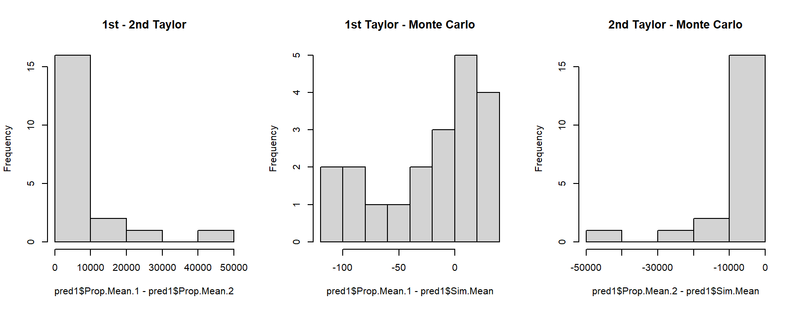
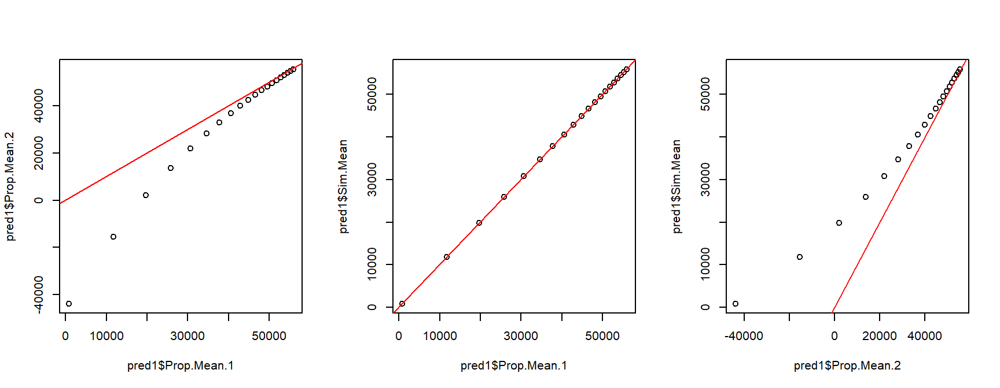
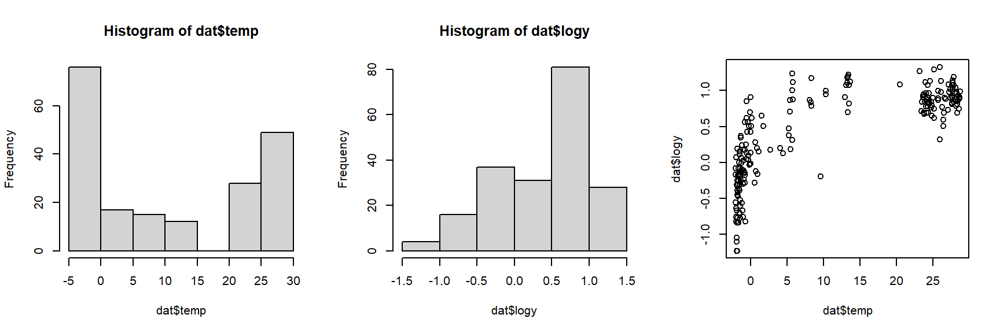
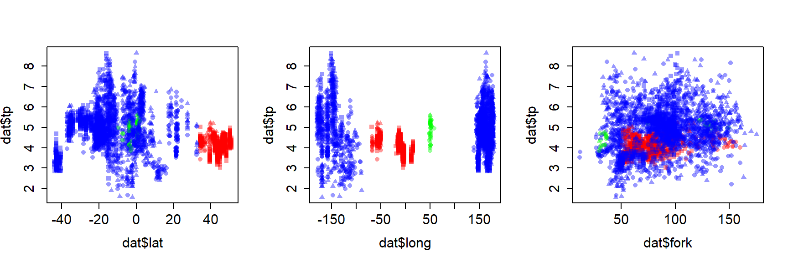
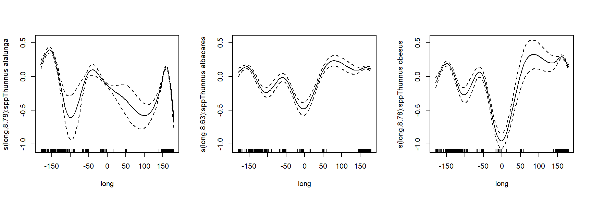

Module 7 Mixed models
7.1 Prelude (GLM)
So far in this course we have explored ways to model data by breaking them down into a deterministic part (that defines the expected value) and a stochastic part (that defines the variability or uncertainty). This culminated in the generalized linear model (GLM), a powerful framework for analyzing biological data.
Sometimes our data contain variability that we want to account for, without necessarily explaining. Some of this variability is described by random effects. Random effects describe variation due to unobserved or uncontrolled factors. As we will see below, random effects have a very different mathematical relationship to the data than the more familiar fixed effects such as intercept and slope. Models that contain both fixed and random effects are called mixed effects models, hierarchical models, or multi-level models. Just like GLMs, we will introduce mixed effects models as if they were extensions of ordinary linear models.
In the previous module we explored the generalized linear model (GLM), which unites many previously separate models into a single framework. A GLM is used to describe a system where there is a linear relationship between the predictor variables and some transformed version of the response variable, and a probability distribution that accounts for variability about the expected value of the response. This is a flexible generalization of the linear model. The linear model is presented below in the format of a GLM to illustrate the basic idea:
\[Y~Normal\left(\mu,\sigma^2\right)\] \[\mu=\eta\] \[\eta=\beta_0+\beta_1X\]
In a GLM there is a linear predictor \(\eta\) (“eta”) that is a linear function of the predictor variable (or variables). The expected value of Y, \(\mu\), is related to \(\eta\) by a deterministic and invertible function (in this case, identity). The actual values of Y come from a probability distribution defined by the expected value \(\mu\) and potentially other parameters (\(\sigma^2\), in this case). The equation for the linear predictor is also called the deterministic part of the model, and the expression for the distribution of the response variable is called the stochastic part of the model. Understanding how to think about statistical models in the language of their deterministic and stochastic parts is the key to understanding mixed models.
7.2 Linear mixed models (LMM)
A LM or GLM like the linear regression model shown above has exactly 1 stochastic component: the distribution of Y with parameters \(\mu\) and \(\sigma^2\). In the absence of an interaction term, a LM or GLM implicitly assumes that the deterministic part of the model is the same for all observations, and for all groups of observations. In reality, this is not always the case. The relationship between a response Y and predictor X might have a different slope within different experimental populations, or cell strains, or plant cultivars…pick any grouping variable you like. Or, the intercept of the relationship might vary by group. Even worse, the intercept and slope might vary by group64. The figure below shows a dataset where each group has a separate intercept and slope:

As a researcher you may or may not be interested in how the slopes and intercepts differ between groups. If the slopes and intercepts associated with particular groups are of interest, then you should include the interaction between that grouping variable and other variables–i.e., an analysis of covariance (ANCOVA) with interaction.
However, sometimes the variation between groups is variation that we are not interested in. This might be because the groups themselves are not of primary interest. For example, a botanist who measures growth rates from five individual trees is probably not interested in fitting growth constants specific to those particular trees. But, she might still want to account for variability between trees in her dataset. In that case, “tree” would be a random effect in her analysis. In her model, the botanist would let the growth rate vary randomly between trees.
As noted by Bolker (2008), the distinction between fixed and random effects is often very murky and the subject of intense (and confusing) debates among statisticians. The table below summarizes some of the key differences between fixed and random effects. See the footnote65 for some good online and offline discussions of the meanings of fixed and random effects.
| Condition | Fixed effects | Random effects |
|---|---|---|
| Research objective | Interested in predicting response for these specific levels of factor. | Interested in predicting response while accounting for variation between levels of factor. |
| Assumption about parameters | Coefficients fixed for all groups or individuals. | Coefficients come from a random distribution. |
| Hypothesis testing | Can get a P-value for coefficient estimates | Cannot formally test that coefficients different from 0. |
| Origin of variation | Values of factor set by experimenter | Values of factor drawn at random from underlying population. |
When should you use a random effect in your analysis? The short answer is when some of the conditions in the right column apply to your data. As long as your choice is biologically defensible and statistically defensible, it is probably okay. There is no single agreed-upon standard for when a factor should be treated as a fixed or random effect.
There is one more aspect of random effects that is less widely appreciated than its implications for the variance structure. Fitting models with random effects between groups allows groups with fewer observations to “borrow” information from groups with more observations. The estimated group-level parameters (aka: BLUPs; see below) depend both on patterns within a group and on patterns that operate on all groups. This property of mixed models can be very useful for situations with unbalanced designs or where insufficient data are collected within all combinations of treatment factors66.
7.2.1 Formal definition and example
Mixed models can be described in several forms. Many biologists use a state-space format similar to the presentation of the GLM seen above. I prefer this form because it makes clear what the random effect is doing in the model: allowing the model intercept, slope, or both to vary random by a grouping factor. The form below also uses the observation-wise notation to make the model structure a little clearer.
\[Y_{ij} \sim Normal\left(\mu_{ij},\sigma\right)\] \[\mu_{ij}=\beta_0+\beta_1X_{ij}+a_i\] \[a_i \sim Normal\left(0,\sigma_a\right)\]
In this model, response variable Y for observation j in group i is drawn from a normal distribution with mean \(\mu_{ij}\) and standard deviation \(\sigma\). The expected value is a linear function of a predictor variable X (measured for observation j in group i) and the effect of belonging to group i, ai. The group effects are random, drawn from a normal distribution with mean 0 and SD \(\sigma_a\). Notice that this model has the same slope for each group, but effectively different intercepts. The same model could also be written as:
\[Y_{ij} \sim Normal\left(\mu_{ij},\sigma\right)\] \[\mu_{ij}=\beta_{0,i}+\beta_1X_{ij}\] \[\beta_{0,i} \sim Normal\left(\mu_{\beta_0},\sigma_{\beta_0}\right)\]
The model above, where the intercept varies randomly between groups, is sometimes called a random intercept model. A similar model could be defined that has a different slope in each group, but with a common intercept. Not surprisingly, this is called a random slope model:
\[Y_{ij} \sim Normal\left(\mu_{ij},\sigma\right)\] \[\mu_{ij}=\beta_0+\beta_{1,i}X_{ij}\] \[\beta_{1,i} \sim Normal\left(\mu_{\beta_1},\sigma_{\beta_1}\right)\]
Or we can get crazy and have a model where both the intercept and slope are random variables:
\[Y_{ij} \sim Normal\left(\mu_{ij},\sigma\right)\] \[\mu_{ij}=\beta_{0,i}+\beta_{1,i}X_{ij}\] \[\beta_{0,i} \sim Normal\left(\mu_{\beta_0},\sigma_{\beta_0}\right)\] \[\beta_{1,i} \sim Normal\left(\mu_{\beta_1},\sigma_{\beta_1}\right)\]
The figure below shows what these three types of models look like in practice.

- In the random intercept model (left), all groups have the same slope but different intercepts. This looks visually like an ANCOVA without interaction, but there is a key difference: instead of being estimated for each group level by least squares, the intercepts of each group (i.e., the effects of being in each group) are assumed to come from a random distribution.
- In the random slope model (center), the groups all have the same intercept but have different slopes.
- In the random intercept and slope model (right), each group has its own intercept and slope. This looks visually like an ANCOVA with interaction, but with a key difference: instead of being estimated for each group level by least squares, the intercepts and slopes are assumed to come from a random distribution.
7.2.2 Example with simulated data
The best way to understand the structure of the LMM is to simulate some data suitable for this type of analysis. This example is adapted from one in chapter 12 of Kéry (2010), which was apparently adapted from Kéry (2002)67.

What a mess! It looks like population might affect mass, but it’s hard to be sure. We can try fitting an ANCOVA model, but the sheer number of populations might make it difficult to get much out of it.
mod1 <- lm(mass~len.sc*factor(group), data=sim)
summary(mod1)##
## Call:
## lm(formula = mass ~ len.sc * factor(group), data = sim)
##
## Residuals:
## Min 1Q Median 3Q Max
## -28.181 -5.755 0.236 6.404 31.993
##
## Coefficients:
## Estimate Std. Error t value Pr(>|t|)
## (Intercept) 191.054 2.461 77.634 < 2e-16 ***
## len.sc 69.219 2.488 27.824 < 2e-16 ***
## factor(group)2 46.999 3.372 13.936 < 2e-16 ***
## factor(group)3 61.753 3.348 18.444 < 2e-16 ***
## factor(group)4 79.475 3.368 23.599 < 2e-16 ***
## factor(group)5 10.422 3.343 3.117 0.00197 **
## factor(group)6 16.211 3.361 4.824 2.08e-06 ***
## factor(group)7 22.669 3.596 6.304 8.48e-10 ***
## factor(group)8 21.630 3.347 6.461 3.37e-10 ***
## factor(group)9 22.693 3.341 6.793 4.56e-11 ***
## factor(group)10 34.157 3.342 10.220 < 2e-16 ***
## factor(group)11 17.508 3.348 5.230 2.89e-07 ***
## factor(group)12 78.423 3.372 23.255 < 2e-16 ***
## factor(group)13 39.791 3.486 11.414 < 2e-16 ***
## factor(group)14 38.247 3.338 11.458 < 2e-16 ***
## factor(group)15 48.387 3.493 13.851 < 2e-16 ***
## factor(group)16 42.141 3.338 12.625 < 2e-16 ***
## factor(group)17 35.137 3.338 10.526 < 2e-16 ***
## factor(group)18 66.286 3.338 19.857 < 2e-16 ***
## factor(group)19 36.231 3.338 10.853 < 2e-16 ***
## factor(group)20 14.415 3.343 4.312 2.09e-05 ***
## len.sc:factor(group)2 -18.619 3.195 -5.827 1.26e-08 ***
## len.sc:factor(group)3 -23.177 3.378 -6.861 3.00e-11 ***
## len.sc:factor(group)4 -40.542 3.320 -12.210 < 2e-16 ***
## len.sc:factor(group)5 6.079 3.429 1.773 0.07713 .
## len.sc:factor(group)6 -16.020 3.464 -4.625 5.23e-06 ***
## len.sc:factor(group)7 10.699 3.766 2.841 0.00475 **
## len.sc:factor(group)8 -15.346 3.347 -4.584 6.29e-06 ***
## len.sc:factor(group)9 -27.713 3.711 -7.468 6.22e-13 ***
## len.sc:factor(group)10 27.793 3.236 8.588 2.71e-16 ***
## len.sc:factor(group)11 -16.138 3.618 -4.460 1.09e-05 ***
## len.sc:factor(group)12 20.837 3.307 6.301 8.64e-10 ***
## len.sc:factor(group)13 -42.091 3.598 -11.699 < 2e-16 ***
## len.sc:factor(group)14 -22.964 3.369 -6.816 3.95e-11 ***
## len.sc:factor(group)15 -18.634 3.391 -5.495 7.40e-08 ***
## len.sc:factor(group)16 -21.612 3.237 -6.677 9.27e-11 ***
## len.sc:factor(group)17 27.873 3.527 7.902 3.38e-14 ***
## len.sc:factor(group)18 -7.946 3.327 -2.389 0.01743 *
## len.sc:factor(group)19 2.053 3.316 0.619 0.53630
## len.sc:factor(group)20 -36.396 3.376 -10.781 < 2e-16 ***
## ---
## Signif. codes: 0 '***' 0.001 '**' 0.01 '*' 0.05 '.' 0.1 ' ' 1
##
## Residual standard error: 10.09 on 360 degrees of freedom
## Multiple R-squared: 0.9779, Adjusted R-squared: 0.9756
## F-statistic: 409.3 on 39 and 360 DF, p-value: < 2.2e-16The fitted model above has 20 intercepts and 20 slopes. Such a model will be difficult to make sense of because of how each factor changes the slope and intercept, and the fact that there is no overall effect of length on mass in the model (at least not explicitly). Before accepting this monstrosity, it’s worth asking whether we really care about the difference in parameters between populations. After all, these 20 populations are not the only 20 populations of this species. They are a random subsample of a much larger set of populations. If we want our results to apply to populations that are not in our dataset, we need to take a different approach.
We can account for population-level differences with a linear mixed model. For this system we can fit 3 different models: a random intercept model, a random slope model, and a random slope and intercept model. The code below will do this using R package lme4.
# package for fitting LMM
library(lme4)
## Loading required package: Matrix
##
## Attaching package: 'lme4'
## The following object is masked from 'package:nlme':
##
## lmList
# fit models
mod1 <- lmer(mass~len.sc+(1|group), data=sim)
mod2 <- lmer(mass~len.sc+(0+len.sc|group), data=sim)
mod3 <- lmer(mass~len.sc+(len.sc|group), data=sim)Below is the summary for model 3. This is different than the output for lm() or glm(). The summary separates the estimates into the fixed effects and random effects.
summary(mod3)## Linear mixed model fit by REML ['lmerMod']
## Formula: mass ~ len.sc + (len.sc | group)
## Data: sim
##
## REML criterion at convergence: 3151.3
##
## Scaled residuals:
## Min 1Q Median 3Q Max
## -2.7807 -0.5698 0.0403 0.6265 3.1840
##
## Random effects:
## Groups Name Variance Std.Dev. Corr
## group (Intercept) 484.3 22.01
## len.sc 438.5 20.94 -0.09
## Residual 101.7 10.09
## Number of obs: 400, groups: group, 20
##
## Fixed effects:
## Estimate Std. Error t value
## (Intercept) 227.702 4.948 46.02
## len.sc 58.604 4.712 12.44
##
## Correlation of Fixed Effects:
## (Intr)
## len.sc -0.085- The fixed effects are presented as estimates with SE and a t-value (but no P-value…we’ll come back to that later).
- The random effects are presented as the variance and SD of the random effects. The output above shows that the intercepts in model 3 had mean 0 and SD 22.01. This is pretty close to the true value of 20. Likewise, the slopes had mean 0 and SD = 20.94. This is not very close to the true value of 30.
- Across groups, the intercepts and slopes are not correlated with each other (r = -0.09). In other words, variation in intercept appears unrelated to variation in slope. This is fine, because that is how the data were simulated.
- Finally, the output tells us that the residual SD was 10.09, very close to the true value of 10.
We can extract the results of a mixed model in several ways. We might ask what the random effects are. These are the differences between the group-specific parameters and the mean parameter. E.g., the difference between the overall estimated intercept (227.702) and the intercepts estimated for each group. The random effects can be accessed with the command ranef(). This returns a list with one element for each factor treated as a random effect. The elements are named according to the name of the factor, so the command below will get us a data frame of the random effects on the intercept and slope of each group.
re <- ranef(mod3)$group
head(re)## (Intercept) len.sc
## 1 -36.16209 10.330202
## 2 10.23061 -7.919170
## 3 24.83656 -12.408188
## 4 42.44908 -29.716640
## 5 -25.97902 16.531595
## 6 -20.22579 -5.352089The output shows us that group 1 had an intercept 36.16 smaller than the overall intercept, and a slope 10.33 greater than the overall slope; group 2 had an intercept 10.23 larger than the overall intercept and a slope 7.92 smaller than the overall slope; and so on.
A more useful output is the one containing the estimated intercepts and slopes for each group, not just their differences from the overall parameters. These can be accessed using the command coef(). As before we will extract the component of the list by name.
blup <- coef(mod3)$group
head(blup)## (Intercept) len.sc
## 1 191.5397 68.93397
## 2 237.9324 50.68460
## 3 252.5384 46.19558
## 4 270.1509 28.88713
## 5 201.7228 75.13536
## 6 207.4760 53.25168The output tells us that group 1 had an intercept of 191.54 and a slope of 68.93; that group 2 had an intercept of 237.93 and slope of 50.68; and so on. The name of the object, blup, is short for best unbiased linear predictor. These are the estimates of the parameters for each group. The name BLUP is retained for historical reasons, although these values are not guaranteed to be “best” or “unbiased”68. Some authors prefer to call them conditional modes. This name denotes that they are the most likely value (“mode”), conditional on the data.
7.2.3 P-values in LMM
The authors of the lme4 package made a conscious decision to not present P-values for model parameters. Their reasons are highly technical and statistically sound, but these facts are often lost on journal reviewers. To make a long story short, lme4 does not calculate P-values because it is not always clear what the correct number of degrees of freedom a model has, and so it is not clear what a P-value would even represent. On top of this, approximating P-values is computationally intractable in many situations, but that’s not a real excuse. That being said, in later work the lme4 authors provide several suggestions for obtaining P-values. We will try the easiest method. In a later example, we try MCMC sampling with JAGS to get another angle on a significance test.
If all you need to know is whether a fixed effect is different from 0, you can calculate the 95% CI using function confint(). This will estimate the 95% CI of each fixed effect. If that CI does not include 0, then the parameter is “statistically significant” even though you don’t know the P-value. The result below shows that both the intercept and slope of the model are likely to be statistically significant.
confint(mod3)## Computing profile confidence intervals ...## 2.5 % 97.5 %
## .sig01 16.1187537 30.3787564
## .sig02 -0.4902622 0.3495054
## .sig03 15.3285043 28.9189751
## .sigma 9.3916449 10.8699356
## (Intercept) 217.7777253 237.6268196
## len.sc 49.1511687 68.0536264If you, your advisor, or a reviewer insist on getting P-values for a mixed effects model, there are some ways. The package lmerTest (Kuznetsova et al. 2017) provides utility functions for working with mixed models. Included are methods for getting P-values from lmer() objects. This package extends the methods in lme4, so it needs to be loaded after lme4 in your workspace. The model fitting functions and syntax are the same. But a model fit using lmerTest can output P-values for the fixed effects.
library(lmerTest) # AFTER loading lme4## Warning: package 'lmerTest' was built under R version 4.1.2##
## Attaching package: 'lmerTest'## The following object is masked from 'package:lme4':
##
## lmer## The following object is masked from 'package:stats':
##
## step# refit models using lmerTest::lmer
## lmerTest version of lmer() will mask lme4 version of lmer()
mod1 <- lmer(mass~len.sc+(1|group), data=sim)
mod2 <- lmer(mass~len.sc+(0+len.sc|group), data=sim)
mod3 <- lmer(mass~len.sc+(len.sc|group), data=sim)
#summary(mod1)
#summary(mod2)
summary(mod3)## Linear mixed model fit by REML. t-tests use Satterthwaite's method [
## lmerModLmerTest]
## Formula: mass ~ len.sc + (len.sc | group)
## Data: sim
##
## REML criterion at convergence: 3151.3
##
## Scaled residuals:
## Min 1Q Median 3Q Max
## -2.7807 -0.5698 0.0403 0.6265 3.1840
##
## Random effects:
## Groups Name Variance Std.Dev. Corr
## group (Intercept) 484.3 22.01
## len.sc 438.5 20.94 -0.09
## Residual 101.7 10.09
## Number of obs: 400, groups: group, 20
##
## Fixed effects:
## Estimate Std. Error df t value Pr(>|t|)
## (Intercept) 227.702 4.948 19.000 46.02 < 2e-16 ***
## len.sc 58.604 4.712 18.999 12.44 1.41e-10 ***
## ---
## Signif. codes: 0 '***' 0.001 '**' 0.01 '*' 0.05 '.' 0.1 ' ' 1
##
## Correlation of Fixed Effects:
## (Intr)
## len.sc -0.085The estimates for the fixed and random effects are basically the same as before. What is different is that the P-value for the t-statistics are provided. If you want the random effects or the BLUPs, the ranef() and coef() methods will work as before.
7.2.4 Specifying random effects
In R, you can specify many kinds of random effects. The syntax for random effects models differs slightly between the two most popular mixed models packages, lme4 and nlme. The table below shows some example random effects structures in lme4:
| Formula | Meaning |
|---|---|
(1 \| g) |
Random intercept by grouping variable g. Single fixed slope for all groups. |
(1 \| g1 / g2) |
Random intercepts among grouping variables g1 and g2, with g2 nested within g1. Single fixed slope for all groups. |
(1 \| g1) + (1 \| g2) |
Random intercepts among g1 and g2, not nested. Single fixed slope for all groups. |
(x \| g) |
Random slope (effect of x) and intercept by grouping variable g. Intercepts and slopes can be correlated with each other. |
(x \|\| g) |
Random slope (effect of x) and intercept by grouping variable g. Intercepts and slopes are not assumed to be correlated with each other. Try this if a model with correlated random effects ((x \| g)) cannot converge. |
(0 + x \| g) |
Random slope by grouping variable g. Single fixed intercept for all groups. |
In lme4, the random effects are added to a model formula as terms after the fixed effects. So, a model of y with an effect of continuous predictor x and random slope by group g would have formula y ~ x + (0 + x | g). You can define a huge variety of random effects structures, but probably shouldn’t. As with defining potential regression models or GLMs, it is incumbent on you as a biologist to think critically about what models represent biologically reasonable hypotheses.
The syntax for random effects in package nlme works a little differently. In nlme, the fixed and random parts of the model are defined by separate arguments, rather than as part of the model formula. The nlme equivalents to the structures above are:
| Formula | Meaning |
|---|---|
~1\|g |
Random intercept by grouping variable g. Single fixed slope for all groups. |
~1\|g1/g2 |
Random intercepts among grouping variables g1 and g2, with g2 nested within g1. Single fixed slope for all groups. |
list(~1\|g1, ~1\|g2) |
Random intercepts among g1 and g2, not nested. Single fixed slope for all groups. |
~x\|g |
Random slope (effect of x) and intercept by grouping variable g. |
~0+x\|g |
Random slope by grouping variable g. Single fixed intercept for all groups. |
The nlme equivalents to the example analysis above are:
# not run
library(nlme)
mod1.nlme <- lme(mass~len.sc, random=~1|group, data=sim)
mod2.nlme <- lme(mass~len.sc, random=~0+len.sc|group, data=sim)
mod3.nlme <- lme(mass~len.sc, random=~len.sc|group, data=sim)7.2.5 LMM example with real data
Despite a wealth of fossil remains and intensive study, many basic questions about the biology of the non-avian dinosaurs remain unanswered. Werner and Griebeler (2014) used data on growth rates in modern vertebrates to investigate whether dinosaurs were endothermic or ectothermic. They collected data on maximal growth rates and body size for 1072 extant species of birds, mammals, reptiles, and fishes, and compared these to 19 dinosaurs. They modeled maximum growth rate against the body size at which each species attained the maximal growth rate. The idea was that if dinosaurs were endothermic, the allometric relationship between their growth rate and body size would match that of modern-day endotherms. We will use their dataset and replicate part of their analysis.
Download the dataset and save it in your R home directory. Then import the data:
in.name <- "werner_2014_data_2021-10-19.csv"
dat <- read.csv(in.name, header=TRUE)Next, let’s take a look at the data.
par(mfrow=c(1,3))
hist(dat$agr)
hist(dat$bm)
plot(dat$bm, dat$agr)
The histograms and the “dust bunny” pattern (i.e., little clump in the corner) in the scatterplot suggests that we should log-transform both variables.
dat$logy <- log(dat$agr)
dat$logx <- log(dat$bm)
par(mfrow=c(1,3))
hist(dat$logx)
hist(dat$logy)
plot(dat$logx, dat$logy)
The log transform did the trick. For the analysis, let’s work with the log-transformed data. If we want to see how the dinosaurs compare to the other taxa, we’ll need to identify them in the plot somehow. In the code below, we will select a color for each unique group, then manually set the color for dinosaurs to be black (so they stand out on the plot).
# identify groups of organisms
groups <- sort(unique(dat$group1))
ngroup <- length(groups)
# 40% opacity (alpha)
cols <- rainbow(ngroup, alpha=0.4)
# same colors but solid (for legend)
cols2 <- rainbow(ngroup)
# change dinosaurs to black
cols[which(groups == "dinosaurs")] <- "black"
cols2[which(groups == "dinosaurs")] <- "black"
# assign colors to observations in data frame
dat$col <- cols[match(dat$group1, groups)]
# make the plot
par(mfrow=c(1,1))
plot(dat$bm, dat$agr,
log="xy", # make x and y axes logarithmic
xlab="Mass at max GR (g)",
ylab="Max growth rate (GR) (g/d)",
col=dat$col, pch=16)
legend("bottomright", legend=groups,
pch=16, col=cols2, cex=1.3)
The figure suggests that, overall, larger animals have faster growth rates. This by itself is not too surprising. What is interesting is how the different groups (birds, dinosaurs, etc.) appear to form different parallel bands in the scatterplot. For any given body mass, birds had the highest growth rate, followed by mammals, then dinosaurs, then fishes and reptiles. Remember that we are interested in how the growth rates of dinosaurs compare to those of other groups. Statistically, this means that we want to see how the intercept and slope for dinosaurs compares to the same parameters for other taxa.
One approach would be to fit an ANCOVA model with mass as the predictor variable and taxon as a factor. The model could be fit with and without interaction, to see whether the intercept and slope really vary by taxon. However, before fitting the ANCOVA, it’s worth asking whether these groups of vertebrates are really representative of vertebrate diversity. Sure, the list includes almost every extant class of Osteichthyes (bony fish). But, it ignores Chondrichthyes and Amphibia. It also ignores other extinct taxa, like Allotheria (extinct Mesozoic mammals), Temnospondyls (extinct large-bodied amphibians), and other groups that might have been included. The groupings here also ignore other ways that the species might have been grouped. For example, should Archaeopteryx be counted as a bird or a dinosaur?69.
From these perspectives, the taxonomic groupings in this dataset might be considered a random subsampling of vertebrate groups. Emphasis on the “might” in the previous sentence. There are other, completely legitimate and scientific ways that the species could have been grouped. So, we probably don’t want to waste statistical power (degrees of freedom) estimating coefficients that are specific to these and only these these groupings. A better strategy would be to let model parameters vary randomly by group, so we account for between-group variability, without tying our analysis to current opinions on taxonomy. So, the situation calls for mixed models rather than with ANCOVA.
The models to be fit are defined below. In each model G is growth rate, M is body mass at maximal growth rate, taxon is group, and \(\beta_0\) and \(\beta_1\) are the intercept and slope. \(\varepsilon\) represents the distribution of residuals with mean 0 and SD = \(\sigma\).
| Model | Description | Model formula |
|---|---|---|
| 1 | LMM with random intercept by taxon | \(\log{\left(G\right)=\beta_{0,Tax}+\beta_1\log{\left(M\right)}}+\varepsilon\) |
| \(\beta_{0,Tax} \sim Normal\left(\mu_{\beta_0},\sigma_{\beta_0}\right)\) | ||
| 2 | LMM with random slope by taxon | \(\log{\left(G\right)=\beta_0+\beta_{1,Tax}\log{\left(M\right)}}+\varepsilon\) |
| \(\beta_{1,Tax} \sim Normal\left(\mu_{\beta_1},\sigma_{\beta_1}\right)\) | ||
| 3 | LMM with random intercept and slope by taxon | \(\log{\left(G\right)=\beta_{0,Tax}+\beta_{1,Tax}\log{\left(M\right)}}+\varepsilon\) |
| \(\beta_{0,Tax} \sim Normal\left(\mu_{\beta_0},\sigma_{\beta_0}\right)\) | ||
| \(\beta_{1,Tax} \sim Normal\left(\mu_{\beta_1},\sigma_{\beta_1}\right)\) | ||
| 4 | LMM with uncorrelated random intercepts and slopes by taxon | \(\log{\left(G\right)=\beta_{0,Tax}+\beta_{1,Tax}\log{\left(M\right)}}+\varepsilon\) |
| \(\beta_{0,Tax} \sim Normal\left(\mu_{\beta_0},\sigma_{\beta_0}\right)\) | ||
| \(\beta_{1,Tax} \sim Normal\left(\mu_{\beta_1},\sigma_{\beta_1}\right)\) |
The R code is straightforward. Notice that the first command (commented out) unloads package lmerTest. This package was loaded in the previous example so we could use its version of lmer(), which allowed us to calculate P-values. If you want the lme4 version of lmer(), then you need to either unload lmerTest, or use the double-colon notation :: to specify which package’s lmer() function you want: lme4::lmer() or lmerTest::lmer(). This document was rendered with lmerTest still loaded, so summary(mod4) will return the lmerTest version with P-values.
# if desired:
# detach(package:lmerTest)
mod1 <- lmer(logy~logx+(1|group1), data=dat)
mod2 <- lmer(logy~logx+(0+logx|group1), data=dat)
mod3 <- lmer(logy~logx+(logx|group1), data=dat)## Warning in checkConv(attr(opt, "derivs"), opt$par, ctrl = control$checkConv, :
## Model failed to converge with max|grad| = 0.00274806 (tol = 0.002, component 1)mod4 <- lmer(logy~logx+(logx||group1), data=dat)Notice that model 3 did not fit (failed to converge). This happens a lot in LMM with correlated random effects. If you think about it, assuming that random intercepts are correlated with random slopes “sneaks in” an extra parameter that has to be estimated: the correlation coefficient. There are plenty of situations where random effects should be correlated, but this may not be one of them. Because it did not converge, Model 3 can probably be safely discarded. That leaves us with models 1, 2, and 4. Model 4 is similar to model 3, but does not assume that the random intercepts and slopes are correlated with each other.
Use summary() to take a look at the models. We’ll look at model 1..
summary(mod1)## Linear mixed model fit by REML. t-tests use Satterthwaite's method [
## lmerModLmerTest]
## Formula: logy ~ logx + (1 | group1)
## Data: dat
##
## REML criterion at convergence: 1850.6
##
## Scaled residuals:
## Min 1Q Median 3Q Max
## -4.0931 -0.5376 0.1150 0.6258 3.6284
##
## Random effects:
## Groups Name Variance Std.Dev.
## group1 (Intercept) 2.7725 1.6651
## Residual 0.3079 0.5549
## Number of obs: 1091, groups: group1, 5
##
## Fixed effects:
## Estimate Std. Error df t value Pr(>|t|)
## (Intercept) -3.327e+00 7.466e-01 4.037e+00 -4.456 0.011 *
## logx 7.095e-01 6.596e-03 1.087e+03 107.574 <2e-16 ***
## ---
## Signif. codes: 0 '***' 0.001 '**' 0.01 '*' 0.05 '.' 0.1 ' ' 1
##
## Correlation of Fixed Effects:
## (Intr)
## logx -0.059The lmerTest summary includes P-values for fixed effects: both the intercept and slope were statistically significant. The random intercepts had mean 0 and SD = 1.665.
Next, compare the models using AIC weights. Notice that model 3, which did not converge, was left out of the AIC weight calculation.
aic.df <- AIC(mod1, mod2, mod4)
# delta-AIC is difference from smallest AIC
aic.df$delta <- aic.df$AIC - min(aic.df$AIC)
# use delta-AIC to calculate AIC_wt
aic.df$wt <- exp(-0.5*aic.df$delta)
aic.df$wt <- aic.df$wt/sum(aic.df$wt)
# order to see models ranked by AIC_wt
aic.df <- aic.df[order(-aic.df$wt),]
aic.df## df AIC delta wt
## mod4 5 1850.173 0.000000 9.856884e-01
## mod1 4 1858.638 8.464541 1.431159e-02
## mod2 4 2825.160 974.987148 1.896577e-212The model with uncorrelated random effects of taxon, model 4, was by far the best-fitting model and the most likely of these 3 models to be the best-fitting one. We will interpret this model and plot its predictions in our write-up.
First, generate a data frame of taxon-specific X values at which to predict Y values. We’ll generate the data frames in a loop and save them to a list. Then, the elements of the list will be combined to a single data frame with do.call(). This is a little extra work, but worth it because our figure will only show model predictions within the observed X range for each group.
# get X range for each group
agg <- aggregate(logx~group1, data=dat, range)
# number of values at which to predict
pn <- 30
# make a list containing a dataframe for each group
px.list <- vector("list", ngroup)
for(i in 1:ngroup){
imin <- agg[[2]][i,1]
imax <- agg[[2]][i,2]
ix <- seq(imin, imax, length=pn)
px.list[[i]] <- data.frame(group1=groups[i],logx=ix)
}
# combine to a single dataframe
dx <- do.call(rbind, px.list)Next, generate predictions. The predict method for LMM does not generate SE; this turns out to be rather difficult mathematically. We’ll plot the expected values first, then circle back and try to estimate some SE to get CI.
pred <- predict(mod4, newdata=data.frame(dx))
dx$y <- predThe next block of code will produce some pretty axis tick marks. This is needed because the scales are logarithmic, but we want the values on the axes to be on the original scale. Manually constructing axes like this can be tedious (and a little confusing), but I think the payoff is worth it. The trick to remember that the plot is on the natural log scale, but the axes should be on the \(log_{10}\) scale for interpretability. Most people intuitively understand \(10^2\), \(10^3\), etc., but \(e^2\), \(e^2\), and so on are not as clear.
The trick is to first define the values at which you want tick marks, THEN convert those values to natural log coordinates.
# main tick marks for powers of 10:
xax1 <- seq(-1, 7)
xax1 <- 10^xax1
xax1 <- log(xax1)
# manually specify some labels for tick marks
xticks <- c("0.1 g", "1 g", "10 g", "100 g",
"1 kg", "10 kg", "100 kg", "1000 kg", "10000 kg")
# smaller tick marks for non-integer powers of 10
xax2 <- c(2:9/10, 2:9, 2:9*10, 2:9*100,
2:9*1000, 2:9*1e4, 2:9*1e5, 2:9*1e6)
xax2 <- log(xax2)
# similar process for Y axis
yax1 <- seq(-3, 4, by=1)
yax1 <- log(10^yax1)
yax2 <- c(2:9/1000, 2:9/100, 2:9/10, 2:9,
2:9*10, 2:9*100, 2:9*1000)
yax2 <- log(yax2)
yticks <- c(0.001, 0.01, 0.1, 1, 10, 100, 1000, 10000)We should also change the group labels to be capitalized for the final figure. We could do this manually, but instead we’ll write a custom R function to capitalize the words. There is a function provided on the help page for tolower() that can do this70:
capwords <- function(s, strict = FALSE) {
cap <- function(s) paste(toupper(substring(s, 1, 1)),
{s <- substring(s, 2); if(strict) tolower(s) else s},
sep = "", collapse = " " )
sapply(strsplit(s, split = " "), cap, USE.NAMES = !is.null(names(s)))
}
# now use the function
group.leg <- capwords(groups)Now set some fancy plot options with par() and make the plot piece-by-piece71. Notice how the plot is set up with a log-log coordinate system (because x and y are given on log scale) and with no axes (xaxt="n" and yaxt="n"). The custom axes are added later. Then, a for() loop is used to plot the prediction lines for each group. Without that, we would have needed to write a separate points() command for each group. Finally, a legend shows the reader how to identify the groups.
par(mfrow=c(1,1), mar=c(5.1, 6.1, 1.1, 1.1),
las=1, lend=1, bty="n", cex.axis=1.1, cex.lab=1.3,
xpd=NA)
plot(log(dat$bm), log(dat$agr), pch=16,
col=dat$col,
xaxt="n", yaxt="n",
xlab="Mass at max GR",
ylab="Max growth rate (GR) (g/day)")
axis(side=1, at=xax1,
labels=xticks)
axis(side=1, at=xax2, labels=NA, tcl=-0.25)
axis(side=2, at=yax1,
labels=yticks)
axis(side=2, at=yax2, labels=NA, tcl=-0.25)
for(i in 1:ngroup){
flag <- which(dx$group == groups[i])
points(dx$logx[flag], dx$y[flag], type="l", lwd=5, col=cols2[i])
}
legend("bottomright", legend=group.leg,
lwd=5, col=cols2, cex=1.3, bty="n")
The final model lets us see that dinosaur growth rates are somewhere in between those of modern endotherms and modern ectotherms. We can compare the coefficients directly by examining the BLUPs. The result shows us that dinosaurs have an intercept and slope intermediate to the other groups.
coef(mod4)$group1## (Intercept) logx
## birds -1.019030 0.7111834
## dinosaurs -3.940582 0.7474059
## fishes -5.360802 0.7693490
## mammals -2.356117 0.6958912
## reptiles -4.571142 0.6812206If you want to examine the BLUPs or conditional modes and see how they vary between groups, you need to obtain the conditional SD as well as the conditional modes. The simplest way is to get them from the ranef() function (short for “random effects”). The conditional SD are only returned when as.data.frame() is used on the results of ranef(), not when ranef() is used by itself.
The commands below will calculate the conditional mean and SD of each BLUP. We can use those results to estimate the 95% CI of each group-specific random parameter. This can also be used as a heuristic for interpreting the BLUPs, but does not tell you whether or not each random effect is “significant”. The framework of a “significant vs. nonsignificant” isn’t as well defined for random effects as it is for fixed effects. If the 95% CI of a random effect does not include 0, then its fine to say that that group’s random effect is not 0. Looking at which groups have nonzero random effects might give you some insight into what is driving the variability in your dataset. However, you should not use this method to say whether a random effect is statistically signficant or not, because you haven’t performed a significance test. More generally, you should not be making inferences based on conditional modes or BLUPs. If you were interested in predicting values for these particular levels of a random factor, then you should have fit it as a fixed effect in the first place!
re <- as.data.frame(ranef(mod4, condVar=TRUE))
# 95% CI (normal approximation)
re$low <- qnorm(0.025, re$condval, re$condsd)
re$upp <- qnorm(0.975, re$condval, re$condsd)
# flag effects whose 95% CI includes 0
# (indicates BLUP not very different from
# fixed effect parameter)
re$inc.0 <- ifelse(0>=re$low & 0<=re$upp, 1, 0)
# round to 2 decimal places
re[,4:7] <- apply(re[,4:7], 2, round, 2)
# inspect results
re## grpvar term grp condval condsd low upp inc.0
## 1 group1 (Intercept) birds 2.43 0.05 2.32 2.54 0
## 2 group1 (Intercept) dinosaurs -0.49 0.39 -1.26 0.27 1
## 3 group1 (Intercept) fishes -1.91 0.10 -2.11 -1.71 0
## 4 group1 (Intercept) mammals 1.09 0.06 0.98 1.21 0
## 5 group1 (Intercept) reptiles -1.12 0.12 -1.36 -0.88 0
## 6 group1 logx birds -0.01 0.01 -0.03 0.01 1
## 7 group1 logx dinosaurs 0.03 0.03 -0.03 0.08 1
## 8 group1 logx fishes 0.05 0.02 0.01 0.08 0
## 9 group1 logx mammals -0.03 0.01 -0.04 -0.01 0
## 10 group1 logx reptiles -0.04 0.02 -0.08 0.00 0The flag inc.0 identifies which BLUPs have a 95% CI that includes 0. If the 95% CI includes 0, then we can infer that the BLUP for that group is not very different from the corresponding fixed effect–i.e., the overall estimate for that parameter. For example, the table above shows that the random effect on the intercept associated with dinosaurs, -0.49 with 95% CI [-1.26, 0.27], is similar to the overall intercept of -3.45 (see summary(mod4)). This is despite the fact that the BLUP for the intercept for dinosaurs was quite large: -3.94 (i.e., -3.45 + -0.49; see coef(mod4)$group1).
If you want the actual BLUPs for the groups and not just their differences from the mean, you can get them by adding estimates of the fixed effects to each parameter to the random effects associated with each group. Do this for every column except the SD. This works because one of the properties of the normal distribution is that its mean (i.e., location) is a separate parameter from its variance. So, adding a constant to the mean will shift the entire distribution, including its quantiles, by that constant while retaining the same variance.
coefs <- summary(mod4)$coefficients
add.val <- rep(coefs[,1], each=ngroup)
re$condval <- round(re$condval + add.val,2)
re$low <- round(re$low + add.val,2)
re$upp <- round(re$upp + add.val,2)
# inspect results
re## grpvar term grp condval condsd low upp inc.0
## 1 group1 (Intercept) birds -1.02 0.05 -1.13 -0.91 0
## 2 group1 (Intercept) dinosaurs -3.94 0.39 -4.71 -3.18 1
## 3 group1 (Intercept) fishes -5.36 0.10 -5.56 -5.16 0
## 4 group1 (Intercept) mammals -2.36 0.06 -2.47 -2.24 0
## 5 group1 (Intercept) reptiles -4.57 0.12 -4.81 -4.33 0
## 6 group1 logx birds 0.71 0.01 0.69 0.73 1
## 7 group1 logx dinosaurs 0.75 0.03 0.69 0.80 1
## 8 group1 logx fishes 0.77 0.02 0.73 0.80 0
## 9 group1 logx mammals 0.69 0.01 0.68 0.71 0
## 10 group1 logx reptiles 0.68 0.02 0.64 0.72 0There are other methods for getting confidence intervals on BLUPs that we will explore some of the other mixed model pages.
7.3 Generalized linear mixed models (GLMM)
7.3.1 Definition
Just as the linear mixed model (LMM) is an extension of the linear model, the generalized linear mixed model (GLMM) is an extension of the generalized linear model (GLM). The difference between the LMM and GLMM is the same as the difference between the LM and GLM: the response values can come from distributions other than the normal, and the model can be linear on a different scale than of the original scale (i.e., the link scale).
The equations for a simple GLMM, with normal (Gaussian) family and identify link function, one continuous predictor variable X, and random intercepts and slope by a factor Z, are shown below. The normal distributions of the random effects are presented as parameterized by a mean \(\mu\) and variance \(\sigma^2\) (or sometimes SD \(\sigma\))72.
| Component | Expression |
|---|---|
| Stochastic part (Y values) | \(y_i \sim Normal\left(\mu_i,\sigma^2\right)\) |
| Link function | \(E\left(y_i\right)=\mu_i=\eta_i\) |
| Linear predictor | \(\eta_i=\beta_{0,Z}+\beta_{1,Z}X_i\) |
| Random intercepts | \(\beta_{0,Z} \sim Normal\left(\mu_{\beta_0},\sigma_{\beta_0}^2\right)\) |
| Random slopes | \(\beta_{1,Z} \sim Normal\left(\mu_{\beta_1},\sigma_{\beta_1}^2\right)\) |
7.3.2 GLMM on simulated data
Let’s explore the GLMM with a simulated example. We’ll simulate data for a simulated study of the occurrence (i.e., presence/absence) of an imaginary bird species along a gradient of urbanization. The imaginary study was conducted over 12 years. In each year, between 9 and 19 sites were surveyed and the presence or absence of an endangered bird was recorded. The researchers assumed that variation in environmental conditions from year to year affected bird presence, so they used a mixed effects model to analyze their data. The explanatory variable, urb, is an index of urbanization and land use intensity derived from satellite data. Because they are interested in modeling bird presence/absence, they used a logistic regression model, with a random effect for year. In ecology this sort of thing is called an occupancy model.
The code below simulates the dataset described above. First the dataset structure is defined. Then, the hyperparameters, which define the distribution of random effects, are set. These are then used to define the group-level parameters and the individual observations.
set.seed(123)
# years in study
n.groups <- 12
# random number of sites each year
n.sample <- sample(8:20, n.groups, replace=TRUE)
# hyperparameters
mu.beta0 <- 1.5
sd.beta0 <- 1.7
mu.beta1 <- -6.8
sd.beta1 <- 0.1
# draw random effects
beta0 <- rnorm(n.groups, mu.beta0, sd.beta0)
beta1 <- rnorm(n.groups, mu.beta1, sd.beta1)
# set up data frame with explanatory variable.
dlist <- vector("list", n.groups)
for(i in 1:n.groups){
dlist[[i]] <- data.frame(year=i, site=1:n.sample[i])
dlist[[i]]$urb <- runif(n.sample[i], 0, 1)
}
sim <- do.call(rbind, dlist)
# add coefficients for each observation
sim$beta0 <- beta0[sim$year]
sim$beta1 <- beta1[sim$year]
# calculate linear predictor eta (logit scale)
# and probability p (probability scale)
sim$eta <- sim$beta0+sim$beta1*sim$urb
sim$p <- plogis(sim$eta)
# apply stochastic part of model (Bernoulli draws)
sim$y <- rbinom(nrow(sim), 1, sim$p)Let’s start the analysis by examining the data:
par(mfrow=c(1,2), mar=c(5.1, 5.1, 1.1, 1.1))
plot(sim$urb, jitter(sim$y))
boxplot(sim$urb~sim$y, horizontal=TRUE)The figure suggests that increasing urbanization tends to decrease occupancy by this bird species. This makes sense, biologically, but it also appears that there is a lot of variation in urbanization within the sites where the bird occurs and the sites where it doesn’t. Maybe there is some variation related to year?
# add colors for each year
cols <- rainbow(n.groups)
sim$col <- cols[sim$year]
par(mfrow=c(1,2), mar=c(5.1, 5.1, 1.1, 1.1))
plot(sim$urb, jitter(sim$y), col=sim$col, pch=16)
boxplot(sim$urb~sim$y, horizontal=TRUE)
With so many groups (years) it’s hard to tell if year might be affecting the relationship between occupancy and urbanization. Let’s use package lattice to make a hierarchical plot that shows the groups separately.
library(lattice)
bwplot(y~urb|factor(year), data=sim)
The figure shows that urbanization appears to decrease occupancy in almost every year. The bird was not observed at all in year 1. In some years, occupancy dropped off at low levels of urbanization (e.g., years 2, 6, and 7); in other years, the bird was found in sites with much higher levels of urbanization (e.g., years 3 and 9). These findings support the idea that year needs to be accounted for. We’ll fit three versions of the model, because we don’t know if the random effect of year should affect the intercept, slope, or intercept and slope of the linear predictor.
library(lme4)
mod1 <- glmer(y~urb+(1|year), data=sim, family=binomial)
mod2 <- glmer(y~urb+(0+urb|year), data=sim, family=binomial)
mod3 <- glmer(y~urb+(urb|year), data=sim, family=binomial)
mod4 <- glmer(y~urb+(urb||year), data=sim, family=binomial)All of the models converged73, so let’s use AIC to determine which model is the best supported by the data.
aic.df <- AIC(mod1, mod2, mod3, mod4)
aic.df$delta <- aic.df$AIC - min(aic.df$AIC)
aic.df$wt <- exp(-0.5*aic.df$delta)
aic.df$wt <- aic.df$wt/sum(aic.df$wt)
aic.df <- aic.df[order(-aic.df$wt),]
aic.df## df AIC delta wt
## mod1 3 139.7622 0.000000 0.50498148
## mod2 3 141.2993 1.537081 0.23415450
## mod4 4 141.7594 1.997213 0.18603135
## mod3 5 143.5807 3.818534 0.07483267Interestingly, AIC identifies model 1 (random intercept) as the best fitting model, when we know that model 4 (random uncorrelated slopes and intercepts) is the truth. Looking back at the simulation parameters, can you guess why this happened? However, \(\Delta\left(AIC\right)\) was <2 for models 1, 2, and 4, suggesting that any of them could be considered “best fitting”.
Inspect the outputs to see what the parameter estimates are. The estimated intercept and slope aren’t very close to the true values (mu.beta0 and mu.beta1), but this might have something do with the large variability in the intercepts (sd.beta0).
summary(mod1)## Generalized linear mixed model fit by maximum likelihood (Laplace
## Approximation) [glmerMod]
## Family: binomial ( logit )
## Formula: y ~ urb + (1 | year)
## Data: sim
##
## AIC BIC logLik deviance df.resid
## 139.8 149.1 -66.9 133.8 161
##
## Scaled residuals:
## Min 1Q Median 3Q Max
## -2.8969 -0.4530 -0.1617 0.3846 4.1386
##
## Random effects:
## Groups Name Variance Std.Dev.
## year (Intercept) 1.137 1.066
## Number of obs: 164, groups: year, 12
##
## Fixed effects:
## Estimate Std. Error z value Pr(>|z|)
## (Intercept) 1.959 0.602 3.254 0.00114 **
## urb -7.312 1.330 -5.496 3.88e-08 ***
## ---
## Signif. codes: 0 '***' 0.001 '**' 0.01 '*' 0.05 '.' 0.1 ' ' 1
##
## Correlation of Fixed Effects:
## (Intr)
## urb -0.753The intercepts vary quite a bit between years:
coef(mod1)$year## (Intercept) urb
## 1 0.8792071 -7.312053
## 2 1.4874052 -7.312053
## 3 2.8794661 -7.312053
## 4 2.0679683 -7.312053
## 5 1.3682659 -7.312053
## 6 2.5975640 -7.312053
## 7 0.9167481 -7.312053
## 8 3.6762635 -7.312053
## 9 2.6771235 -7.312053
## 10 1.1477449 -7.312053
## 11 2.0878343 -7.312053
## 12 2.0208604 -7.312053Plotting the intercept vs. year (i.e., time) might tell us something about how environmental factors varied over time.
ints <- coef(mod1)$year
par(mfrow=c(1,1))
plot(ints[,1], type="o", lwd=3, pch=16)
It appears that the intercept dropped precipitously 3 times: year 3, year 6, and years 8-10. Maybe something happened in those years that reduced the likelihood of the bird showing up. For example, maybe these were drought years. Or maybe those were the years when new cohorts of graduate students were recruited who weren’t as effective at finding the birds. Whatever the cause of the variation was, the GLMM accounted for it. Explaining and interpreting that variation it is the job of the biologist.
We’ll finish our example GLMM analysis by plotting the model predictions.
# number of points and x values
pn <- 50
px <- seq(0, 1, length=pn)
# predictions by level (year)
dx1 <- expand.grid(year=1:n.groups, urb=px)
dx1 <- dx1[order(dx1$year, dx1$urb),]
# coefficients (include random beta0)
dx1$y <- predict(mod1, newdata=data.frame(dx1), type="link")
dx1$y <- plogis(dx1$y)
dx1$col <- cols[dx1$year]
# predictions for "average"
dx2 <- data.frame(year=NA, urb=px)
dx2$y <- predict(mod1, newdata=data.frame(dx2),
type="link", re.form=NA, allow.new.levels=TRUE)
dx2$y <- plogis(dx2$y)Now make the plot:
par(mfrow=c(1,1), mar=c(5.1, 5.1, 1.1, 1.1),
lend=1, las=1, bty="n",
cex.axis=1.3, cex.lab=1.3)
plot(dx1$urb, dx1$y, type="n",
ylim=c(0,1), ylab="Occupancy probability",
xlab="Urbanization index")
for(i in 1:n.groups){
flag <- which(dx1$year==i)
points(dx1$urb[flag], dx1$y[flag], type="l", col="grey60")
}
points(dx2$urb, dx2$y, type="l", lwd=3)
7.3.3 GLMM on real data
This example is adapted from Zuur et al. (2009a). Vicente et al. (2005) studied the distribution of the parasitic nematode Elaphostrongylus cervi in red deer (Cervus elephus) in Spain (below)74. Red deer are the primary hosts of E. cervi, which primarily affect the hosts’ lung tissue. Vicente et al. (2005) surveyed deer feces on many farms in Spain and tested droppings for E. cervi larvae. We will analyze part of their dataset, to see if red deer size and sex affect the occurrence of E. cervi larvae. We will use GLMM to account for potential variation in parasite occurrence between farms. GLMM is appropriate in this situation because we are not interested in the effects of particular farms, which are a subsample of the locations where red deer occur.

Download the dataset and save it to your R home directory. This is a tab-delimited file (.txt), so you need to use read.table() instead of read.csv().
dat.name <- "DeerEcervi.txt"
dat <- read.table(dat.name, sep="\t", header=TRUE)The dataset has the following variables:
| Variable | Meaning |
|---|---|
| Farm | Farm (i.e., sampling site) |
| Sex | Sex of deer (1 = female, 2 = male) |
| Length | Deer body length (cm) |
| Ecervi | Parasite load in fecal sample |
Because we are interested in parasite occurrence, not abundance, we should use logistic regression. That is, a binomial GLM with a logit link. We will include a random effect associated with farm. Before running the analysis, let’s modify the variables in the dataset. First, define a response variable y that is 1 when parasites are present and 0 when parasite are absent. Then, center the deer lengths by subtracting the mean length. Finally, recode the sexes as f and m instead of 1 and 2. This is optional but will make things easier later.
dat$y <- ifelse(dat$Ecervi > 0, 1, 0)
dat$len <- dat$Length-mean(dat$Length)
dat$sex <- ifelse(dat$Sex==1, "f", "m")Now we can fit a model. Like the original authors, we will investigate the effects of sex, size, and farm. The model for parasite presence y in individual j on farm i, with probability \(p_{ij}\), varies with length \(L_{ij}\), sex \(S_{ij}\), the interaction between sex and length \(S_{ij}L_{ij}\), and farm \(F_i\) as:
\[y_i \sim Bernoulli\left(p_{ij}\right)\] \[logit\left(p_{ij}\right)=\beta_0+\beta_1L_{ij}+\beta_2S_{ij}+\beta_3L_{ij}S_{ij}+\gamma_i\] \[\gamma_i \sim Normal\left(\mu_\gamma,\sigma_{\gamma}\right)\]
In this model farm has a random effect on the intercept, \(\gamma_i\). The random effects on the intercepts are assumed to come from a normal distribution with mean \(\mu_{\gamma}\) and SD \(\sigma_{\gamma}\). Some people prefer to write the model a slightly different way, which combines the overall intercept \(\beta_0\) with the random effects on the intercept \(\gamma_i\) as a single parameter \(\beta_{0,i}\):
\[logit\left(p_{ij}\right)=\beta_{0,i}+\beta_1L_{ij}+\beta_2S_{ij}+\beta_3L_{ij}S_{ij}+\gamma_i\] \[\beta_{0,i} \sim Normal\left(\mu_{\beta_0},\sigma_{\beta_0}\right)\]
In this format, the combined intercept \(\beta_{0,i}\), is equivalent to \(\left( \beta_0 + \gamma_i \right)\) for each group i. This is the way I prefer to write GLMM formulas because it makes it more clear what the random effects are really doing.
GLMM can be fit with lme4::glmer():
library(lme4)
mod1 <- glmer(y~len*sex+(1|Farm), data=dat, family=binomial)
summary(mod1)## Generalized linear mixed model fit by maximum likelihood (Laplace
## Approximation) [glmerMod]
## Family: binomial ( logit )
## Formula: y ~ len * sex + (1 | Farm)
## Data: dat
##
## AIC BIC logLik deviance df.resid
## 832.6 856.1 -411.3 822.6 821
##
## Scaled residuals:
## Min 1Q Median 3Q Max
## -6.2678 -0.6090 0.2809 0.5022 3.4546
##
## Random effects:
## Groups Name Variance Std.Dev.
## Farm (Intercept) 2.391 1.546
## Number of obs: 826, groups: Farm, 24
##
## Fixed effects:
## Estimate Std. Error z value Pr(>|z|)
## (Intercept) 0.938969 0.356004 2.638 0.00835 **
## len 0.038964 0.006917 5.633 1.77e-08 ***
## sexm 0.624487 0.222938 2.801 0.00509 **
## len:sexm 0.035859 0.011409 3.143 0.00167 **
## ---
## Signif. codes: 0 '***' 0.001 '**' 0.01 '*' 0.05 '.' 0.1 ' ' 1
##
## Correlation of Fixed Effects:
## (Intr) len sexm
## len -0.107
## sexm -0.189 0.238
## len:sexm 0.091 -0.514 0.232The model is essentially an ANCOVA model (continuous predictor that interacts with a factor, sex) fit as a binomial GLM (logistic regression) with a random effect of another factor (Farm). Interpreting the fixed effects length (len) and sex is a little tricky because of the interaction. We have to be careful and think about which observations each coefficient applies to:
- The printed intercept,
(Intercept), of 0.939 is the intercept for the baselinesex, females, regardless of farm effects. - The printed coefficient for length (
len), 0.038, is the slope for the baselinesex(females). - The intercept for males is the baseline intercept plus the effect of being male: 0.9389 + 0.6244 = 1.5634.
- The slope for males is the baseline slope plus the effect of being male on the slope: 0.0389 + 0.0358 = 0.0748.
Thus, the fixed effects for females are:
\[logit\left(p_j\right)=0.939+0.038L_j\]
And the fixed effects for males are:
\[logit\left(p_j\right)=\left(0.939+0.624\right)+\left(0.039+0.036\right)L_j=1.563+0.075L_j\]
Now let’s plot the model predictions against the original data. We’ll assemble a new dataset that covers the domain of x values (centered lengths), both sexes, and the 24 farms.
farms <- sort(unique(dat$Farm))
nfarm <- length(farms)
agg <- aggregate(len~sex, data=dat, range)
agg <- agg[[2]]
n <- 50
dx1 <- expand.grid(
sex="f",
len=seq(agg[1,1], agg[1,2], length=n),
Farm=farms)
dx2 <- expand.grid(
sex="m",
len=seq(agg[2,1], agg[2,2], length=n),
Farm=farms)
dx <- rbind(dx1, dx2)Now generate the predictions:
pred <- predict(mod1, newdata=data.frame(dx), type="link")
dx$y <- pred
# inverse link function
dx$py <- plogis(dx$y)The predictions we just calculated are specific to each farm. The “average” probability, which ignores farm, can be obtained either predicting without random effects (safest), by manual calculation using the fixed effects (more trouble but generally okay) or by averaging across levels of the random effect (not recommended). The first two methods are demonstrated below, but we’re going to use the outputs from the first.
# method 1: predict with re.form=NA
dx3 <- dx[which(dx$Farm == farms[1]),]
dx3$y <- predict(mod1,
newdata=data.frame(dx3),
type="link", re.form=NA)
dx3$py <- plogis(dx3$y)
# method 1 ver. 2: predict to a new level of the random effect
dx5 <- dx[which(dx$Farm == farms[1]),]
dx5$Farm <- NA
dx5$y <- predict(mod1,
newdata=data.frame(dx5),
type="link", re.form=NA,
allow.new.levels=TRUE)
dx5$py <- plogis(dx5$y)
# method 2: manually calculate
dx4 <- dx3
flag <- which(dx4$sex == "f")
dx4$y[flag] <- 0.939+0.038*dx4$len[flag]
dx4$y[-flag] <- 1.563+0.075*dx4$len[-flag]For clarity, we will plot females and males on separate plots. Also for clarity, we will not plot the data and instead will plot the predicted probabilities.
par(mfrow=c(1,2))
plot(dx$len, dx$py, type="n", ylim=c(0,1),
xlab="Centered length (cm)",
ylab=expression(Probability~of~italic(E)*.~italic(cervi)~larvae))
use.dx <- dx[which(dx$sex == "f"),]
for(i in 1:nfarm){
flag <- which(use.dx$Farm == farms[i])
points(use.dx$len[flag], use.dx$py[flag], type="l")
}
flag <- which(dx3$sex == "f")
points(dx3$len[flag], dx3$py[flag], type="l", lwd=4, col="red")
title(main="Female deer")
plot(dx$len, dx$py, type="n", ylim=c(0,1),
xlab="Centered length (cm)",
ylab=expression(Probability~of~italic(E)*.~italic(cervi)~larvae))
use.dx <- dx[which(dx$sex == "m"),]
for(i in 1:nfarm){
flag <- which(use.dx$Farm == farms[i])
points(use.dx$len[flag], use.dx$py[flag], type="l")
}
flag <- which(dx3$sex == "m")
points(dx3$len[flag], dx3$py[flag], type="l", lwd=4, col="red")
title(main="Male deer")
It is worth asking what the 95% CI of the predicted probability for an “average” farm would be. We can calculate this using some information from the summary of model 1 (see above). The random effects on the intercept for each farm have mean 0 and SD = 1.546. Because this model has only a random intercept, and not a random slope, we can express uncertainty about the predicted value (on the logit scale) by shifting the predicted value up or down. This means that the predicted value (on the logit scale) has a confidence interval defined by a normal distribution with the predicted value as the mean, and a standard deviation of 1.546. For any predicted value \(E(logit(p))\), the 95% CI can be approximated as \(E(logit(p)) \pm 1.96\times1.546\).
In R we can calculate the CI directly using the normal distribution quantile functions:
dx5 <- dx[which(dx$Farm == farms[1]),]
dx5$Farm <- NA
dx5$y <- predict(mod1,
newdata=data.frame(dx5),
type="link", re.form=NA,
allow.new.levels=TRUE)
dx5$lo <- qnorm(0.025, dx5$y, 1.546)
dx5$up <- qnorm(0.975, dx5$y, 1.546)
# inverse link function
dx5$py <- plogis(dx5$y)
dx5$plo <- plogis(dx5$lo)
dx5$pup <- plogis(dx5$up)Finally, we can make the plot with the approximated 95% CI:
par(mfrow=c(1,1))
plot(dx$len, dx$py, type="n", ylim=c(0,1),
xlab="Centered length (cm)",
ylab=expression(Probability~of~italic(E)*.~italic(cervi)~larvae))
flag1 <- which(dx5$sex == "f")
flag2 <- which(dx5$sex == "m")
polygon(x=c(dx5$len[flag1], rev(dx5$len[flag1])),
y=c(dx5$plo[flag1], rev(dx5$pup[flag1])),
border=NA, col="#FF000030")
polygon(x=c(dx5$len[flag2], rev(dx5$len[flag2])),
y=c(dx5$plo[flag2], rev(dx5$pup[flag2])),
border=NA, col="#0000FF30")
points(dx5$len[flag1], dx5$py[flag1], type="l", lwd=3, col="red3")
points(dx5$len[flag2], dx5$py[flag2], type="l", lwd=3, col="blue3")
legend("bottomright", legend=c("Female", "Male"),
lwd=3, col=c("red3", "blue3"), bty="n")
Because the GLMM we fit was a logistic regression model, you could also calculate an ROC curve and AUC) to express the predictive accuracy of the model. For other GLMM, you could perform a cross-validation analysis to see how well the model predicts out-of-sample data.
7.4 Nonlinear mixed models (NLME)
7.4.1 Definition and background
Nonlinear mixed effects models (NLME) extend the nonlinear model (NLS) to allow parameters to vary randomly by a factor. In an LMM or GLMM, the parameters that could vary randomly were the intercept and slope (or other coefficients). Because NLS models don’t always have intercepts and slopes, the random effects can potentially apply to any parameter in the model. For example, a mixed effects Michaelis-Menten model might have an asymptote, Michaelis constant, or both that vary randomly between levels of a factor:

As you might expect, fitting NLME can be tricky: it combines all of the difficulties with nonlinear models with those of mixed models! One of the most commonly used options is the nlmer() function from the lme4 package. For complicated models you may want to consider using Bayesian inference with JAGS because of the added flexibility afforded by the Markov chain Monte Carlo (MCMC) paradigm.
7.4.2 NLME on simulated data
Let’s simulate data that might have come from an enzyme kinetics study. We’ll model reaction rate y as a function of concentration x for some family of substrates. NLME might be a better choice than NLS for such a problem because the selection of substrates is only a sampling of the potential substrates, and the researcher is interested in how reaction rate might vary with concentration for other, untested substrates.
set.seed(123)
# data structure: number of substates (nlev)
# and replicates per concentration
# and substrate (nrep)
nlev <- 8
nrep <- 3
# concentrations:
x <- 10^seq(-2, 2, by=0.5)
# hyperparameters for a and b
avec <- rnorm(nlev, 129, 12)
bvec <- rnorm(nlev, 22, 12)
# assemble dataframe of predictors and parameters
dat <- expand.grid(subs=1:nlev, conc=x, rep=1:nrep)
dat$a <- avec[dat$subs]
dat$b <- bvec[dat$subs]
# calculate expected value
dat$mu <- (dat$a*dat$conc)/(dat$b+dat$conc)
# residual SD and residuals
sigma <- 10
dat$y <- rnorm(nrow(dat), dat$mu, sigma)
# can't have negative values
dat$y <- pmax(0, dat$y)
# add colors for plotting
cols <- rainbow(nlev)
dat$col <- cols[dat$subs]Make a quick plot of expected value in each group (substrate):

We can also see the actual data:
plot(jitter(dat$conc), dat$y, pch=16, col=dat$col)
Faced with these data, we might suspect that the y variable (reaction rate) could be modeled by a Michaelis-Menten (MM) function. However, we might also suspect that there is a lot of variation due to substrate that is not accounted for by a garden variety MM model. If we are not interested in these substrates in particular, but only as representatives of all substrates, then a mixed model is called for. What is not clear is whether the asymptote, Michaelis constant, or both should be random. Fortunately, it is straightforward to test all three variations.
To use nlmer(), you need to specify the model in 3 parts: response, function, and random effects. The parts are separated by tildes (~). Unlike nls(), where the model formula can be provided directly, the model formula in nlmer() must be a function that takes in a predictor and uses named parameters to produce a numeric output. The self-start functions we saw in the NLS unit can be used for this, but unlike in nls() you always need to provide starting values. The starting values can be estimated or guessed at by inspecting the scatterplot and thinking about the meaning of each parameter (example). Fortunately, the random effects syntax works in much the same way as it does in lmer().
library(lme4)
# named vector of starting values
startvec <- c(a=120, b=25)
# model 1: random asymptote
mod1 <- nlmer(y~SSmicmen(conc, a, b)~a|subs,
data=dat, start=startvec)
# model 2: random Michaelis constant
mod2 <- nlmer(y~SSmicmen(conc, a, b)~b|subs,
data=dat, start=startvec)
# model 3: random both parameters
mod3 <- nlmer(y~SSmicmen(conc, a, b)~(a|subs)+(b|subs),
data=dat, start=startvec)The parameter estimates of all three models are close to the true values. We can compare the fit of the models using AIC and find that model 3 has the best fit. This should not be surprising because model 3 is the correct one.
AIC(mod1, mod2, mod3)## df AIC
## mod1 4 1563.909
## mod2 4 1573.510
## mod3 5 1561.939Unfortunately, generating predictions for nlmer() models is not straightforward75. So, let’s use a different method of model fitting: Markov chain Monte Carlo (MCMC). You’ll need a separate program, JAGS (Plummer 2003), and the R packages rjags (Plummer 2021) and R2jags (Su and Masanao Yajima 2021). The general procedure for using JAGS is to first write the model to a text file using sink(), then call JAGS from within R. JAGS will then read the text file and fit the model. The code block below will write the model file to your current R working directory.
# write model file
mod.name <- "nlme_mod03.txt"sink(mod.name)
cat("
model{
# priors
## hyperparameters
mu.a ~ dunif(1, 200)
sd.a ~ dunif(1, 20)
mu.b ~ dunif(1, 200)
sd.b ~ dunif(1, 20)
## precision of a and b
tau.a <- 1/(sd.a * sd.a)
tau.b <- 1/(sd.b * sd.b)
## parameters
for(i in 1:nlev){
a.vec[i]~dnorm(mu.a, tau.a)
b.vec[i]~dnorm(mu.b, tau.b)
}
## residual SD and precision (tau)
sigma ~ dunif(0, 1e4)
tau.y <- 1 / (sigma * sigma)
# likelihood
for(i in 1:N){
y[i] ~ dnorm(eta[i], tau.y)
eta[i] <- (a.vec[levs[i]] *
x[i])/(b.vec[levs[i]]+x[i])
}# i for N
}#model
", fill=TRUE)
sink()Next, package the data up for JAGS. Any value or set of values used in the model must be included by name in a list.
# package data for JAGS
in.data <- list(y=dat$y,
x=dat$conc,
levs=dat$subs,
N=nrow(dat),
nlev=nlev
)Any value that is not fixed (i.e., part of the input data) must be supplied with an initial value. It doesn’t matter much what this value is, as long as it is within the proper domain of the variable. For example, initial values for the \(\lambda\) parameter of a Poisson distribution must be \(\ge\) 0. The initial values must be stored in a list that has one element for each MCMC chain. I prefer to define a function that generates initial values automatically, in case I ever want to change the number of chains.
# define initial values for MCMC chains
init.fun <- function(nc){
res <- vector("list", length=nc)
for(i in 1:nc){
res[[i]] <- list(
mu.a=runif(1, 1, 200),
sd.a=runif(1, 1, 20),
mu.b=runif(1, 1, 200),
sd.b=runif(1, 1, 20),
a.vec=runif(nlev, 1, 200),
b.vec=runif(nlev, 1, 20),
sigma=runif(1, 0.1, 20))
}#i
return(res)
}Finally, set some parameters that control how JAGS will run. For actual inference, use a number of iterations \(\ge\) 100,000 (n.iter) and a burn-in length (n.burn) of about 20% of the total number of iterations. A large thinning interval (n.thin) is needed to mitigate autocorrelation of the MCMC chains; 100 is commonly used. These values are probably larger than needed for JAGS, but not larger than needed for OpenBUGS or WinBUGS76. The final size of your posterior samples—i.e., the number of draws from the posterior distribution that can be used for inference—is equal to:
\[n_{post}=n_{chains}\left(\frac{n_{iter}-n_{burn}}{n_{thin}}\right)\]
Set the last few parameters and send the model to JAGS:
library(rjags)
library(R2jags)
nchains <- 3
inits <- init.fun(nchains)
# parameters to monitor
params <- c("mu.a", "sd.a", "mu.b", "sd.b", "sigma",
"a.vec", "b.vec")
# MCMC parameters
n.iter <- 5e3
n.burnin <- 1e2
n.thin <- 100
mod3j <- jags(data=in.data, inits=inits,
parameters.to.save=params,
model.file=mod.name,
n.chains=nchains, n.iter=n.iter,
n.burnin=n.burnin, n.thin=n.thin)#jags## Compiling model graph
## Resolving undeclared variables
## Allocating nodes
## Graph information:
## Observed stochastic nodes: 216
## Unobserved stochastic nodes: 21
## Total graph size: 909
##
## Initializing model
##
##
|
| | 0%
|
|++++++++++++++++++++++++++++++++++++++++++++++++++| 100%
##
|
| | 0%
|
|* | 2%
|
|** | 4%
|
|*** | 6%
|
|**** | 8%
|
|***** | 10%
|
|****** | 12%
|
|******* | 14%
|
|******** | 16%
|
|********* | 18%
|
|********** | 20%
|
|*********** | 22%
|
|************ | 24%
|
|************* | 27%
|
|************** | 29%
|
|*************** | 31%
|
|**************** | 33%
|
|***************** | 35%
|
|****************** | 37%
|
|******************* | 39%
|
|******************** | 41%
|
|********************* | 43%
|
|********************** | 45%
|
|*********************** | 47%
|
|************************ | 49%
|
|************************** | 51%
|
|*************************** | 53%
|
|**************************** | 55%
|
|***************************** | 57%
|
|****************************** | 59%
|
|******************************* | 61%
|
|******************************** | 63%
|
|********************************* | 65%
|
|********************************** | 67%
|
|*********************************** | 69%
|
|************************************ | 71%
|
|************************************* | 73%
|
|************************************** | 76%
|
|*************************************** | 78%
|
|**************************************** | 80%
|
|***************************************** | 82%
|
|****************************************** | 84%
|
|******************************************* | 86%
|
|******************************************** | 88%
|
|********************************************* | 90%
|
|********************************************** | 92%
|
|*********************************************** | 94%
|
|************************************************ | 96%
|
|************************************************* | 98%
|
|**************************************************| 100%The most important part of the output is here obtained by printing the model object to the console:
mod3j## Inference for Bugs model at "nlme_mod03.txt", fit using jags,
## 3 chains, each with 5000 iterations (first 100 discarded), n.thin = 100
## n.sims = 147 iterations saved
## mu.vect sd.vect 2.5% 25% 50% 75% 97.5% Rhat
## a.vec[1] 128.513 6.888 116.049 123.847 128.003 133.146 142.769 0.995
## a.vec[2] 124.844 7.369 112.265 119.553 123.998 129.427 141.065 1.027
## a.vec[3] 131.011 8.392 117.081 125.895 129.974 135.282 149.705 1.002
## a.vec[4] 128.561 7.784 114.009 123.471 128.797 133.397 143.299 1.018
## a.vec[5] 130.787 8.030 116.861 125.303 129.991 135.742 146.610 1.034
## a.vec[6] 141.115 7.310 128.492 136.745 139.739 145.799 157.006 1.030
## a.vec[7] 157.374 8.199 142.347 152.461 156.953 161.871 173.935 1.023
## a.vec[8] 112.327 9.903 94.144 105.211 111.992 118.570 132.351 0.999
## b.vec[1] 17.655 3.048 12.552 15.310 17.434 19.692 23.174 0.998
## b.vec[2] 17.503 3.452 12.110 14.843 17.549 19.415 24.899 1.045
## b.vec[3] 30.481 5.581 21.453 27.065 29.868 33.323 43.953 1.004
## b.vec[4] 25.801 4.611 18.427 22.587 25.446 28.601 35.398 0.993
## b.vec[5] 22.084 3.786 15.758 19.649 21.693 24.311 29.921 1.026
## b.vec[6] 22.279 3.304 17.169 19.847 21.889 24.332 29.111 1.015
## b.vec[7] 23.264 3.522 17.293 20.870 22.635 25.248 30.658 1.036
## b.vec[8] 38.488 8.071 25.234 32.215 37.642 44.289 55.795 1.007
## mu.a 131.686 5.700 120.606 128.297 131.977 135.282 143.156 0.999
## mu.b 24.845 3.978 18.438 22.266 24.084 27.565 32.609 1.018
## sd.a 14.226 3.392 7.310 11.971 14.170 16.999 19.760 1.064
## sd.b 9.087 3.613 3.604 6.349 8.695 11.196 17.040 1.037
## sigma 8.244 0.411 7.515 7.919 8.222 8.496 9.086 1.017
## deviance 1523.397 6.499 1513.634 1518.874 1522.689 1526.226 1537.916 1.080
## n.eff
## a.vec[1] 150
## a.vec[2] 75
## a.vec[3] 150
## a.vec[4] 150
## a.vec[5] 68
## a.vec[6] 150
## a.vec[7] 140
## a.vec[8] 150
## b.vec[1] 150
## b.vec[2] 58
## b.vec[3] 150
## b.vec[4] 150
## b.vec[5] 67
## b.vec[6] 140
## b.vec[7] 76
## b.vec[8] 120
## mu.a 150
## mu.b 150
## sd.a 83
## sd.b 75
## sigma 150
## deviance 35
##
## For each parameter, n.eff is a crude measure of effective sample size,
## and Rhat is the potential scale reduction factor (at convergence, Rhat=1).
##
## DIC info (using the rule, pD = var(deviance)/2)
## pD = 20.2 and DIC = 1543.5
## DIC is an estimate of expected predictive error (lower deviance is better).Unlike lmer(), glmer(), and nlmer(), an MCMC output automatically contains estimates of the region in which value of each parameter is likely to fall. However, instead of being called “confidence intervals” (CI), these intervals are called credible intervals (CRI). The difference between a CI and a CRI is in how they are calculated. CI are calculated using the estimated mean, SE, and properties of the normal distribution. CRI, on the other hand, are simply quantiles of the posterior distribution of the parameter. This means that CRI are inherently Bayesian and only defined in Bayesian inference; CI are frequentist and used in non-Bayesian context. CRI have the distinct advantage of not assuming anything about the appropriate distribution for the parameter.
Other outputs of MCMC can be used to calculate model predictions and their 95% CRI. Let’s use the posterior draws to calculate model predictions. The posteriors are stored in several ways within the JAGS output. For generating predictions and CRI, we should use the values in the sims.matrix part of the output, which have already been permuted (this reduces bias in the predictions).
po <- mod3j$BUGSoutput$sims.matrix
nsim <- nrow(po)
a.cols <- grep("a.vec", colnames(po))
b.cols <- grep("b.vec", colnames(po))
pn <- 100
x <- seq(min(dat$conc), max(dat$conc), length=pn)
# version 1: full random effects
dx1 <- expand.grid(subs=1:nlev, conc=x)
dy1 <- matrix(NA, nrow=nrow(dx1), ncol=nsim)
for(i in 1:nrow(dx1)){
ilev <- dx1$subs[i]
use.ac <- a.cols[ilev]
use.bc <- b.cols[ilev]
for(j in 1:nsim){
use.a <- po[j, use.ac]
use.b <- po[j, use.bc]
dy1[i,j] <- (use.a*dx1$conc[i])/(use.b+dx1$conc[i])
}
}
dx1$lo <- apply(dy1, 1, quantile, 0.025)
dx1$mn <- apply(dy1, 1, quantile, 0.5)
dx1$up <- apply(dy1, 1, quantile, 0.975)
# version 2: no random effects
dx2 <- data.frame(conc=x)
dy2 <- matrix(NA, nrow=nrow(dx2), ncol=nrow(po))
for(i in 1:nrow(dx2)){
for(j in 1:nsim){
dy2[i,j] <- po[j,"mu.a"]*dx2$conc[i]/(po[j,"mu.b"]+dx2$conc[i])
}
}
dx2$lo <- apply(dy2, 1, quantile, 0.025)
dx2$mn <- apply(dy2, 1, quantile, 0.5)
dx2$up <- apply(dy2, 1, quantile, 0.975)Now make the plot:
plot(dx2$conc, dx2$mn, type="n",
xlab="Concentration (units)",
ylab="Reaction rate (units)",
ylim=c(0, 150))
polygon(x=c(dx2$conc, rev(dx2$conc)),
y=c(dx2$lo, rev(dx2$up)),
border=NA, col="lightpink")
points(dx2$conc, dx2$mn, type="l", lwd=3, col="red2")
for(i in 1:nlev){
flag <- which(dx1$subs==i)
points(dx1$conc[flag], dx1$mn[flag],
type="l", col="grey40")
}
The plot shows the curves for individual substrates as thin lines, and the overall prediction with 95% CRI as a red line and shaded area. The highlighted curve and CRI is the expectation for any level of the random effect factor not in the original dataset. In other words, it is what the model predicts given the variability in the levels of the random factor that have already been observed. The ability to make robust predictions about unobserved levels of the random factor is one of the biggest advantages of mixed models.
7.4.3 NLME on real data
Kirchman et al. (2009) investigated the role of temperature and organic carbon availability on growth and secondary production by heterotrophic bacteria in the oceans. Heterotrophic bacteria are key components of marine food webs and can exert enormous control over ecosystem cycling of nutrients. The figure below shows the place of heterotrophic bacteria in the marine “microbial loop” that relates dissolved CO2 and dissolved organic carbon (DOC) (Kirchman et al. 2009).

To better understand how these bacteria affect ocean ecosystems, the authors examined bacterial growth (d-1) and productivity (mmol C m-2 d-1) varied with latitude (\(^\circ\)N or \(^\circ\)S), nutrient availability (\(\mu\)M C), and mean annual temperature (\(^\circ\)C). We will re-examine part of their dataset to practice using nonlinear mixed effects models. The data are stored in this text file. Download this file and save it to your R working directory.
in.name <- "kirchman_data_2021-10-21.csv"
dat <- read.csv(in.name, header=TRUE)As usual, we start by exploring the distributions of the variables and a basic scatterplot.
par(mfrow=c(1,3))
hist(dat$temp)
hist(dat$prod)
plot(dat$temp, dat$prod)
The figure suggests that the response variable, productivity (prod), is right-skewed. So, it might benefit from a log transform. The scatterplot backs this up—notice the “dust bunny” in the lower right. It’s not clear whether or not the predictor variable temperature (temp) needs to be transformed. Let’s leave it alone for now.
Make a log-transformed version of productivity and a new set of exploratory figures. We’ll use \(log_{10}\) to save ourselves some trouble later.
dat$logy <- log10(dat$prod)
par(mfrow=c(1,3))
hist(dat$temp)
hist(dat$logy)
plot(dat$temp, dat$logy)
There appears to be a nonlinear relationship between log-transformed productivity and temperature. The values start small and increase quickly until about 2 \(^\circ\)C, after which the productivity levels off. Can you think of a biological interpretation of this curve shape?
There seem to be some distinct clumps in the scatterplot which might correspond to the grouping variable sea. Let’s add some colors to the dataset and then to the plot. Just for fun, let’s make a color ramp from colder to warmer sites.
agg <- aggregate(temp~sea, data=dat, median)
agg <- agg[order(agg$temp),]
nsea <- nrow(agg)
seas <- agg$sea
# color ramp from colder (blue) to warmer (red)
col.fun <- colorRampPalette(c("blue", "red"))
cols <- col.fun(nsea)
agg$col <- cols
matchx <- match(dat$sea, agg$sea)
dat$col <- agg$col[matchx]
par(mfrow=c(1,1))
plot(dat$temp, dat$logy,
pch=16, col=dat$col, cex=1.3)
legend("bottomright", legend=seas,
pch=16, col=cols, cex=1.3)
As nice as the color ramp effect is, the seas are still hard to tell apart. Let’s add some shapes as well.
agg$shp <- 15:17
dat$shp <- agg$shp[matchx]
par(mfrow=c(1,1))
plot(dat$temp, dat$logy,
pch=dat$shp, col=dat$col, cex=1.3)
legend("bottomright", legend=seas,
pch=agg$shp, col=cols, cex=1.3)
There appears to be an effect of temperature and possibly of sea. Biologically, the bacteria within a sea are probably more similar to each other than they are to bacteria in other seas. So, we should expect there to be some effect of sea just based on genetic relatedness or some other kind of similarity. However, we want a model that is applicable to all seas, not just the 6 in this dataset. For example, this dataset is missing the Indian Ocean, the Mediterranean, the Caribbean, the Sea of Japan, and many others. So, we need a nonlinear mixed model. We don’t know exactly what curve to use, so we’ll try a few. The table below shows the equations for each model.
| Model | Function | Fixed effects | Random effects |
|---|---|---|---|
| 1 | Monod, random a | \(\mu_i=\frac{a_jx_i}{b+x_i}\) | \(a_j \sim Normal\left(\mu_a,\sigma_a^2\right)\) |
| 2 | Monod, random b | \(\mu_i=\frac{ax_i}{b_j+x_i}\) | \(b_j \sim Normal\left(\mu_b,\sigma_b^2\right)\) |
| 3 | Monod, random a and b | \(\mu_i=\frac{a_jx_i}{b_j+x_i}\) | \(a_j \sim Normal\left(\mu_a,\sigma_a^2\right)\) |
| \(b_j \sim Normal\left(\mu_b,\sigma_b^2\right)\) | |||
| 4 | Holling type III, random a | \(\mu_i=\frac{a_jx_i^2}{b^2+x_i^2}\) | \(a_j \sim Normal\left(\mu_a,\sigma_a^2\right)\) |
| 5 | Holling type III, random b | \(\mu_i=\frac{ax_i^2}{b_j^2+x_i^2}\) | \(b_j \sim Normal\left(\mu_b,\sigma_b^2\right)\) |
| 6 | Holling type III, random a and b | \(\mu_i=\frac{a_jx_i^2}{b^2+x_i^2}\) | \(a_j \sim Normal\left(\mu_a,\sigma_a^2\right)\) |
| \(b_j \sim Normal\left(\mu_b,\sigma_b^2\right)\) | |||
| 7 | Monomolecular, random a | \(\mu_i=a_j\left(1-e^{-bx}\right)\) | \(a_j \sim Normal\left(\mu_a,\sigma_a^2\right)\) |
| 8 | Monomolecular, random b | \(\mu_i=a\left(1-e^{-b_jx}\right)\) | \(b_j \sim Normal\left(\mu_b,\sigma_b^2\right)\) |
| 9 | Monomolecular, random a and b | \(\mu_i=a_j\left(1-e^{-b_jx}\right)\) | \(a_j \sim Normal\left(\mu_a,\sigma_a^2\right)\) |
| \(b_j \sim Normal\left(\mu_b,\sigma_b^2\right)\) |
Fitting the Monod (aka: Michaelis-Menten) model with mixed effects is simple, because there is a self-start version of the function designed for nonlinear modeling (we’ve used it before). We just need to remember to supply reasonable starting values.
library(lme4)
# Monod (aka: Michaelis-Menten) with
# different random structures
startvec <- c(a=1.3, b=1)
mod01 <- nlmer(logy~SSmicmen(temp, a, b)~a|sea,
data=dat, start=startvec)
mod02 <- nlmer(logy~SSmicmen(temp, a, b)~b|sea,
data=dat, start=startvec)
mod03 <- nlmer(logy~SSmicmen(temp, a, b)~(a|sea)+(b|sea),
data=dat, start=startvec)The other two curves are less simple to fit because there is no self-start model available. In nlmer(), the fixed part of the model needs to be provided as a special type of function that takes in input values and parameter values, and outputs a vector of response values. Additionally, the function needs to have some internal attributes that let nlmer() evaluate its likelihood function and how the likelihood function changes. The procedure below seems to work well.
# Holling type III (Bolker 2008 p. 92)
startvec <- c(a=1.3, b=1)
# define model as function
holl <- ~(a*x^2)/(b^2 + x^2)
# prepare version of function for nlmer()
hollfun <- deriv(holl, namevec=c("a", "b"),
function.arg=c("x", "a", "b"))
# fit models
mod04 <- nlmer(logy~hollfun(temp, a, b)~a|sea,
data=dat, start=startvec)
mod05 <- nlmer(logy~hollfun(temp, a, b)~b|sea,
data=dat, start=startvec)## Warning in (function (fn, par, lower = rep.int(-Inf, n), upper = rep.int(Inf, :
## failure to converge in 10000 evaluations## Warning in optwrap(control$optimizer[[1]], devfun, rho$pp$theta, lower =
## rho$lower, : convergence code 4 from Nelder_Mead: failure to converge in 10000
## evaluations## Error in fn(nM$xeval()): prss{Update} failed to converge in 'maxit' iterationsmod06 <- nlmer(logy~hollfun(temp, a, b)~(a|sea)+(b|sea),
data=dat, start=startvec)## Error in fn(nM$xeval()): prss{Update} failed to converge in 'maxit' iterations# monomolecular (Bolker p. 95)
# special case of von Bertalanffy curve
# define model as function
mono <- ~a*(1-exp(-b*x))
# prepare version of function for nlmer()
monofun <- deriv(mono, namevec=c("a", "b"),
function.arg=c("x", "a", "b"))
mod07 <- nlmer(logy~monofun(temp, a, b)~a|sea,
data=dat, start=startvec)
mod08 <- nlmer(logy~monofun(temp, a, b)~b|sea,
data=dat, start=startvec)
mod09 <- nlmer(logy~monofun(temp, a, b)~(a|sea)+(b|sea),
data=dat, start=startvec)R was not able to find solutions for models 5 and 6, so we can discard those. Let’s examine the outputs of the models that did fit. First, we can use AIC to get a sense of which models might have worked best:
aic.df <- AIC(mod01, mod02, mod03, mod04, mod07, mod08, mod09)
aic.df$delta <- aic.df$AIC - min(aic.df$AIC)
aic.df$wt <- exp(-0.5*aic.df$delta)
aic.df$wt <- aic.df$wt/sum(aic.df$wt)
aic.df <- aic.df[order(-aic.df$wt),]
aic.df## df AIC delta wt
## mod08 4 105.4030 0.000000 6.545609e-01
## mod09 5 107.4030 1.999977 2.408023e-01
## mod07 4 109.0699 3.666938 1.046368e-01
## mod04 4 156.6238 51.220848 4.937240e-12
## mod01 4 164.5428 59.139802 9.416842e-14
## mod03 5 166.5428 61.139802 3.464263e-14
## mod02 4 376.3158 270.912825 9.726972e-60The AICs suggest that model 8 is the best-fitting. This was the monomolecular curve with the growth constant (b) varying by sea. The Monod functions were the worst fitting (by AIC); and the only Holling curve that fit was somewhere in the middle.
Let’s generate and plot model predictions as usual. We’ll have to calculate the predictions manually because the predict() method for nlmer() objects is not well documented.
# number of points and x values
pn <- 50
px <- seq(min(dat$temp), max(dat$temp), length=pn)
# predictions by level (sea)
dx1 <- expand.grid(sea=seas, temp=px)
dx1 <- dx1[order(dx1$sea, dx1$temp),]
## coefficients table (including random b)
cofs <- coef(mod08)$sea
matchx <- match(dx1$sea, rownames(cofs))
dx1$a <- cofs$a[matchx]
dx1$b <- cofs$b[matchx]
## calculate predictions
dx1$y <- dx1$a*(1-exp(-dx1$b*dx1$temp))
# prediction of overall mean (applicable to other seas)
dx2 <- data.frame(temp=px)
fixe <- fixef(mod08)
dx2$y <- fixe["a"]*(1-exp(-fixe["b"]*dx2$temp))Now we can assemble a few pieces and make our nice plot.
# 40% opacity (alpha) to the colors for
# clearer plot (pun intended)
dat$col2 <- paste0(dat$col, "40")
# nicer version of names for legend
leg.labs <- c(
"Ross Sea", "Western Arctic",
"Subarctic Pacific", "North Atlantic",
"Arabian Sea", "Equatorial Pacific")
# graphical parameters for attractive plot
par(mfrow=c(1,1), mar=c(5.1, 5.1, 1.1, 1.1),
lend=1, las=1, bty="n",
cex.axis=1.3, cex.lab=1.3)
# set up plot area
## note expression() used for proper axis labels
## and y axis suppressed (yaxt="n") so a better
## y axis can be added manually
plot(dat$temp, dat$logy, type="n",
xlab=expression(Temperature~(degree*C)),
ylab=expression(Productivity~(mmol~C~m^{-2}~d^{-1})),
yaxt="n",
ylim=c(-1.5, 2))
# add sea-specific lines in a loop
for(i in 1:nsea){
flag <- which(dx1$sea == seas[i])
points(dx1$temp[flag], dx1$y[flag],
type="l", col="grey60")
}
# add fixed effect line
points(dx2$temp, dx2$y, type="l", lwd=3)
# original data, with semi-transparent colors
points(dat$temp, dat$logy,
pch=dat$shp, col=dat$col2, cex=1.3)
# fancy y axis with logarithmic tick marks
axis(side=2, at=seq(-1, 2, by=1),
labels=c(0.1, 1, 10, 100))
axis(side=2, at=log10(c(2:9/10, 2:9, 2:9*10)),
labels=NA, tcl=-0.25)
# legend
legend("bottomright", legend=leg.labs, pch=agg$shp,
col=paste0(cols, "40"), cex=1.3, bty="n")
7.5 (Generalized) additive mixed models (AMM/GAMM)
The last category of mixed models that we will cover are generalized additive mixed models (GAMM). GAMM extend generalized additive models (GAM) by allowing for observations in different groups to have different intercepts or different smoothing functions. If that sounds complicated, that’s because it is.
- Additive models (AM) are a generalization of linear models, where a smoother of arbitrary shape is fit instead of a straight line. Smoothers can describe nonlinear patterns (very common in biology), but the process of fitting smoothers is sensitive to many assumptions and methodological details.
- Generalized additive models (GAM) generalize AM by relaxing the assumption of normal residuals and introducing a link function to additive models. This adds a layer of complexity to additive modeling77.
- Generalized additive mixed models (GAMM) generalize GAM by allowing different groups of observations to have different smoothers, or different coefficients on those smoothers. This adds even more complexity to the model.
Going from a linear model to a generalized linear model adds a layer of complication. Going from a fixed effects model to a mixed effects model adds more complication. And going from a linear model to an additive one compounds all of these complications. I’m not trying to warn you away from trying GAMM–just advising you to be prepared for frustration.
7.5.1 Example GAMM with real data
Pethybridge et al. (2018) compiled data on stable isotope concentrations in 3 species of tuna throughout the Atlantic, Pacific, and Indian Oceans. They used these concentrations to estimate the trophic position of each species. The data were made available in a separate publication (Bodin et al. 2021). Download this adapted version of the dataset and save it to your R home directory (or other favorite folder). Import the data and take a look.
in.name <- "bodin_data_2021-10-22.csv"
dat <- read.csv(in.name, header=TRUE)
# remove observations missing trophic position
dat <- dat[!is.na(dat$tp),]
# inspect dataset
head(dat)## species common date lat long ocean fork d15n
## 1 Thunnus alalunga Albacore tuna 2002-10-10 -16.64 -150.79 PO 91 15.17
## 2 Thunnus alalunga Albacore tuna 2004-16-09 -25.85 153.98 PO 87 9.55
## 3 Thunnus alalunga Albacore tuna 2004-16-09 -25.85 153.98 PO 99 9.48
## 4 Thunnus alalunga Albacore tuna 2004-20-09 -28.17 155.82 PO 78 10.46
## 5 Thunnus alalunga Albacore tuna 2004-23-09 -28.37 160.13 PO 76 12.23
## 6 Thunnus alalunga Albacore tuna 2004-23-09 -28.37 160.13 PO 80 10.35
## tp
## 1 7.32
## 2 4.98
## 3 4.95
## 4 5.36
## 5 6.10
## 6 5.31The dataset has the following variables:
| Variable | Units | Definition |
|---|---|---|
species |
N/A | Scientific name (binomen) of species. |
common |
N/A | Common name of species. |
date |
Days | Date of observation in YYYY-MM-DD format. |
lat |
\(^\circ\)N | Latitude of observation. Positive values indicate \(^\circ\)N; negative values indicate \(^\circ\)S. |
long |
\(^\circ\)E | Longitude of observation. Positive values indicate \(^\circ\)E; negative values indicate \(^\circ\)W. |
ocean |
N/A | Ocean where observation was taken. AO = Atlantic Ocean; IO = Indian Ocean; PO = Pacific Ocean. |
fork |
cm | Fork length (FL) of individual fish (distance from tip of snout to middle caudal fin rays). Slightly less than total length (TL). |
d15n |
Parts per thousand | Ratio of 15N to 14N in sample (aka: \(\delta\)15N or “delta fifteen N”) |
tp |
Tropic levels | Estimated trophic level of individual based on \(\delta\)15N in tissue samples. |
The researchers were interested in how the trophic level of tuna varied with body size and geography. The trophic level expresses how high in the food chain an animal is. Primary producers such as plants and phytoplankton have a trophic level of 1. Animals that consume primary producers have a trophic level of 2. For example, grasses have trophic level 1, zebras have trophic level 2, and lions have trophic level 3.
The variables in play are animal size (fork length), latitude, longitude, ocean, and species. Fork length, latitude, and longitude can be modeled as continuous predictors. Ocean and species are factors. Ocean has 3 levels (Atlantic, Indian, and Pacific), as does species (Thunnus albacares, T. obesus, and T. alalunga). Which of these factors should be treated as fixed? Which as random? It depends on the researchers’ goals. If the objective is to predict the trophic position of particular species, or to predict the trophic position of species within particular oceans, then those factors should be fixed. If the sets of oceans and species in the dataset are just taken as representing other, unexamined oceans and/or species, then these factors should be treated as random. We will follow the example of the original authors and treat ocean as a random factor, with species as fixed.
Now that we have decided on a mixed model approach, we need to decide whether to use linear models or additive models. A quick plot of the data, with species and ocean overlaid as shapes and colors, respectively, suggests that linear models are unlikely to describe the data very well. So, we can try an additive model.
# color by ocean
ocs <- sort(unique(dat$ocean))
cols <- rainbow(length(ocs), alpha=0.4)
dat$col <- cols[match(dat$ocean, ocs)]
# shape by species
spps <- sort(unique(dat$species))
pchs <- 15:17
dat$pch <- pchs[match(dat$species, spps)]
par(mfrow=c(1,3), cex.lab=1.4, cex.axis=1.4)
plot(dat$lat, dat$tp, col=dat$col, pch=dat$pch)
plot(dat$long, dat$tp, col=dat$col, pch=dat$pch)
plot(dat$fork, dat$tp, col=dat$col, pch=dat$pch)
Next, we need to consider what kind of additive model to use. The decision of whether to use an additive mixed model (AMM) or generalized additive mixed model (GAMM) hinges on the distribution of the response variable. Trophic positions cannot be negative (or <1), so we might think of the values as coming from a lognormal distribution. This would be a GAMM with Gaussian family and log link function.
The main R package for fitting GAMM is the same package for fitting GAM: mgcv (Wood 2017). It should be noted that there are several ways within mgcv to fit GAMM. We’ll use the function gamm(); function gam() can also be used by manipulating some of the arguments to the smoother functions s().
For this example we will fit 3 models, each with smoothers for a single continuous predictor. Each species will have its own smoother: this is what the by=spp argument in s() does. The random intercept of ocean is specified as a list.
library(mgcv)
# very important: make a factor version of species to be
# used by gamm()
dat$spp <- factor(dat$species)
# fit models
mod01 <- gamm(tp~s(lat, by=spp), data=dat,
random=list(ocean=~1), family=gaussian(link="log"))##
## Maximum number of PQL iterations: 20## iteration 1## iteration 2## iteration 3## iteration 4mod02 <- gamm(tp~s(long, by=spp), data=dat,
random=list(ocean=~1), family=gaussian(link="log"))##
## Maximum number of PQL iterations: 20## iteration 1## iteration 2## iteration 3## iteration 4## iteration 5mod03 <- gamm(tp~s(fork, by=spp), data=dat,
random=list(ocean=~1), family=gaussian(link="log"))##
## Maximum number of PQL iterations: 20## iteration 1## iteration 2## iteration 3## iteration 4Outputs from gamm() are very complicated and intimidating, even to experts. The most important part of the output is in the $gam component.
summary(mod01$gam, cor=FALSE)##
## Family: gaussian
## Link function: log
##
## Formula:
## tp ~ s(lat, by = spp)
##
## Parametric coefficients:
## Estimate Std. Error t value Pr(>|t|)
## (Intercept) 1.64874 0.01467 112.4 <2e-16 ***
## ---
## Signif. codes: 0 '***' 0.001 '**' 0.01 '*' 0.05 '.' 0.1 ' ' 1
##
## Approximate significance of smooth terms:
## edf Ref.df F p-value
## s(lat):sppThunnus alalunga 7.257 7.257 122.11 <2e-16 ***
## s(lat):sppThunnus albacares 8.743 8.743 27.61 <2e-16 ***
## s(lat):sppThunnus obesus 8.661 8.661 20.05 <2e-16 ***
## ---
## Signif. codes: 0 '***' 0.001 '**' 0.01 '*' 0.05 '.' 0.1 ' ' 1
##
## R-sq.(adj) = 0.365
## Scale est. = 0.68458 n = 3177The output contains only one parametric component, the estimated intercept. The overall or mean intercept was estimated as 1.648 \(\pm\) 0.015, and was statistically significant. The “approximate signicance” of smooth terms is presented in a table separate from the parametric components. The “approximate” part of the name is very important: take estimates of P-values, R2, and other such measures from GAMMs with a grain of salt. Even the help page for summary.gam() states that the P-value presented are likely to be too small.
If you have a factor with >2 levels, you can print an ANOVA for the level-specific smoothers:
anova(mod01$gam)##
## Family: gaussian
## Link function: log
##
## Formula:
## tp ~ s(lat, by = spp)
##
## Approximate significance of smooth terms:
## edf Ref.df F p-value
## s(lat):sppThunnus alalunga 7.257 7.257 122.11 <2e-16
## s(lat):sppThunnus albacares 8.743 8.743 27.61 <2e-16
## s(lat):sppThunnus obesus 8.661 8.661 20.05 <2e-16You can see the estimated smoothers using plot() on the $gam output.
par(mfrow=c(1,3)) # 1x3 panels, because 3 smoothers
plot(mod01$gam)
plot(mod02$gam)
plot(mod03$gam)
Some of the smoothers for the predictor variables have quite different shapes for each species! The original study authors fit a separate model for each species and continuous predictor combination. But, with this many observations (nrow(dat)), we might be able to fit a single model that includes all predictors.
# can we fit all the predictors in one model?
mod04 <- gamm(tp~s(lat, by=spp)+s(long, by=spp)+s(fork, by=spp),
data=dat,
random=list(ocean=~1),
family=gaussian(link="log"))##
## Maximum number of PQL iterations: 20## iteration 1## iteration 2## iteration 3## iteration 4# yes!
summary(mod04$gam)##
## Family: gaussian
## Link function: log
##
## Formula:
## tp ~ s(lat, by = spp) + s(long, by = spp) + s(fork, by = spp)
##
## Parametric coefficients:
## Estimate Std. Error t value Pr(>|t|)
## (Intercept) 1.8114 0.1406 12.88 <2e-16 ***
## ---
## Signif. codes: 0 '***' 0.001 '**' 0.01 '*' 0.05 '.' 0.1 ' ' 1
##
## Approximate significance of smooth terms:
## edf Ref.df F p-value
## s(lat):sppThunnus alalunga 6.581 6.581 66.471 < 2e-16 ***
## s(lat):sppThunnus albacares 8.518 8.518 20.780 < 2e-16 ***
## s(lat):sppThunnus obesus 8.848 8.848 32.363 < 2e-16 ***
## s(long):sppThunnus alalunga 8.100 8.100 40.762 < 2e-16 ***
## s(long):sppThunnus albacares 8.020 8.020 23.551 < 2e-16 ***
## s(long):sppThunnus obesus 8.010 8.010 52.744 < 2e-16 ***
## s(fork):sppThunnus alalunga 3.660 3.660 8.713 1.64e-05 ***
## s(fork):sppThunnus albacares 6.447 6.447 14.814 < 2e-16 ***
## s(fork):sppThunnus obesus 7.625 7.625 4.212 4.67e-05 ***
## ---
## Signif. codes: 0 '***' 0.001 '**' 0.01 '*' 0.05 '.' 0.1 ' ' 1
##
## R-sq.(adj) = -0.0545
## Scale est. = 0.48822 n = 3168Examine the smoothers:
# 3 predictors * 3 species = 9 panels
# note use of mfcol to fill by column,
# so species are rows and predictors are columns
par(mfcol=c(3,3))
plot(mod04$gam)
The plots produced by plotting a $gam output show the effect of each smoother, not the actual predicted y value. The predicted value for an observation is obtained by adding the intercept to the effect of each smoother (this is what the “additive” in “additive model” means). For your manuscript, you probably want to show model predictions on the original data scale. The method below should work for most situations.
In the past, we’ve predicted response variables with single continuous predictor variables. For this example, we have 3 continuous predictors. The usual strategy a situation with >1 continuous predictor is to present model predictions for each predictor with the other predictors held at their median. This makes the bookkeeping a little complicated, but the final graph is well worth the effort.
# number of x values for prediction
pn <- 50
# sequence of each x value acros its domain
px1 <- seq(min(dat$lat), max(dat$lat), length=pn)
px2 <- seq(min(dat$long), max(dat$long), length=pn)
px3 <- seq(min(dat$fork, na.rm=TRUE),
max(dat$fork, na.rm=TRUE), length=pn)
# data frame of all factors and an index for row number (z)
dx <- expand.grid(ocean=NA, spp=spps, z=1:pn)
dx <- dx[order(dx$ocean, dx$spp, dx$z),]
# add median of each predictor to dx
dx$lat <- median(dat$lat)
dx$long <- median(dat$long)
dx$fork <- median(dat$fork, na.rm=TRUE)
# need separate data frame of predictions for
# each predictor
dx1 <- dx
dx2 <- dx
dx3 <- dx
# in each prediction data frame, assign ONE of
# the predictors its sequence of values, leaving
# other predictors at their median.
## works because of recycling rule:
dx1$lat <- px1
dx2$long <- px2
dx3$fork <- px3
# calculate predictions
pred1 <- predict(mod04$gam, newdata=data.frame(dx1),
type="link", se.fit=TRUE)
pred2 <- predict(mod04$gam, newdata=data.frame(dx2),
type="link", se.fit=TRUE)
pred3 <- predict(mod04$gam, newdata=data.frame(dx3),
type="link", se.fit=TRUE)
# add predictions and SE to data frames
dx1$mu <- pred1$fit
dx2$mu <- pred2$fit
dx3$mu <- pred3$fit
dx1$se <- pred1$se.fit
dx2$se <- pred2$se.fit
dx3$se <- pred3$se.fit
# normal approximation for 95% CI
dx1$lo <- qlnorm(0.025, dx1$mu, dx1$se)
dx2$lo <- qlnorm(0.025, dx2$mu, dx2$se)
dx3$lo <- qlnorm(0.025, dx3$mu, dx3$se)
dx1$mn <- qlnorm(0.5, dx1$mu, dx1$se)
dx2$mn <- qlnorm(0.5, dx2$mu, dx2$se)
dx3$mn <- qlnorm(0.5, dx3$mu, dx3$se)
dx1$up <- qlnorm(0.975, dx1$mu, dx1$se)
dx2$up <- qlnorm(0.975, dx2$mu, dx2$se)
dx3$up <- qlnorm(0.975, dx3$mu, dx3$se)
# add variable "panel" to help organize the plot later
dx1$panel <- rep(1:3, each=pn)
dx2$panel <- rep(4:6, each=pn)
dx3$panel <- rep(7:9, each=pn)
dz <- rbind(dx1, dx2, dx3)
dz <- dz[order(dz$panel),]Next we make the plot.
# helps with bookkeeping
pan.df <- data.frame(panel=1:9,
con=rep(c("lat", "long", "fork"), each=3),
spp=rep(spps, times=3))
par(mfrow=c(3,3), mar=c(5.1, 5.1, 1.1, 1.1),
bty="n", las=1)
for(i in 1:9){
flag <- which(dz$panel == i)
zi <- dz[flag,]
xvar <- pan.df$con[i]
x <- zi[,xvar]
sppi <- pan.df$spp[i]
di <- dat[which(dat$species == sppi),]
if(xvar == "lat"){
use.xlab <- expression(Latitude~(degree*N))
}
if(xvar == "long"){
use.xlab <- expression(Longitude~(degree*E))
}
if(xvar == "fork"){
use.xlab <- "Fork length (cm)"
}
plot(di[,xvar], di$tp, pch=16, col="#00000020",
ylim=c(0,16), xlab=use.xlab,
ylab="Trophic level (unitless)")
points(x, zi$mn, type="l", lwd=3, col="red")
points(x, zi$lo, type="l", lwd=3, lty=2, col="red")
points(x, zi$up, type="l", lwd=3, lty=2, col="red")
title(main=pan.df$spp[i], adj=0, font.main=3)
} 
The fitted smoothers are pretty good for some species and predictors, but not so much for others. Refinement of the analysis should involve revisiting what distribution to use and what random effects structure to include in the model. Fiddling with the options for fitting smoothers (see ?s) might help as well.